Complete Results
These results are based on Carter2019 data-generating mechanism with a total of 756 conditions.
Average Performance
Method performance measures are aggregated across all simulated conditions to provide an overall impression of method performance. However, keep in mind that a method with a high overall ranking is not necessarily the “best” method for a particular application. To select a suitable method for your application, consider also non-aggregated performance measures in conditions most relevant to your application. (TODO: add links to non-aggregated data exploration tool)
| Rank | Method | Value | Rank | Method | Value |
|---|---|---|---|---|---|
| 1 | PETPEESE-default | 0.002 | 1 | PETPEESE-default | 0.002 |
| 2 | AK-AK1 | 0.022 | 2 | AK-AK1 | 0.022 |
| 3 | PEESE-default | 0.025 | 3 | PEESE-default | 0.025 |
| 4 | puniform-default | 0.028 | 4 | puniform-default | 0.033 |
| 5 | pcurve-default | 0.052 | 5 | AK-AK2 | -0.035 |
| 6 | EK-default | -0.052 | 6 | pcurve-default | 0.048 |
| 7 | PET-default | -0.052 | 7 | EK-default | -0.052 |
| 8 | WAAPWLS-default | 0.054 | 8 | PET-default | -0.052 |
| 9 | trimfill-default | 0.067 | 9 | WAAPWLS-default | 0.054 |
| 10 | AK-AK2 | -0.075 | 10 | trimfill-default | 0.067 |
| 11 | FMA-default | 0.092 | 11 | RoBMA-PSMA | -0.088 |
| 11 | WLS-default | 0.092 | 12 | FMA-default | 0.092 |
| 13 | RoBMA-PSMA | -0.094 | 12 | WLS-default | 0.092 |
| 14 | SM-3PSM | -0.108 | 14 | SM-3PSM | -0.100 |
| 15 | RMA-default | 0.150 | 15 | RMA-default | 0.150 |
| 16 | SM-4PSM | -0.200 | 16 | SM-4PSM | -0.203 |
| 17 | WILS-default | -0.230 | 17 | WILS-default | -0.230 |
| 18 | mean-default | 0.235 | 18 | mean-default | 0.235 |
| 19 | puniform-star | -31.860 | 19 | puniform-star | -31.860 |
| Rank | Method | Value | Rank | Method | Value |
|---|---|---|---|---|---|
| 1 | WAAPWLS-default | 0.105 | 1 | WAAPWLS-default | 0.105 |
| 2 | PEESE-default | 0.107 | 2 | PEESE-default | 0.107 |
| 3 | trimfill-default | 0.113 | 3 | trimfill-default | 0.113 |
| 4 | PETPEESE-default | 0.119 | 4 | PETPEESE-default | 0.119 |
| 5 | FMA-default | 0.124 | 5 | FMA-default | 0.124 |
| 5 | WLS-default | 0.124 | 5 | WLS-default | 0.124 |
| 7 | RoBMA-PSMA | 0.135 | 7 | RoBMA-PSMA | 0.137 |
| 8 | EK-default | 0.149 | 8 | EK-default | 0.149 |
| 9 | PET-default | 0.149 | 9 | PET-default | 0.149 |
| 10 | AK-AK1 | 0.163 | 10 | AK-AK1 | 0.161 |
| 11 | RMA-default | 0.164 | 11 | RMA-default | 0.164 |
| 12 | pcurve-default | 0.169 | 12 | pcurve-default | 0.165 |
| 13 | AK-AK2 | 0.189 | 13 | AK-AK2 | 0.221 |
| 14 | mean-default | 0.249 | 14 | mean-default | 0.249 |
| 15 | WILS-default | 0.278 | 15 | WILS-default | 0.278 |
| 16 | SM-3PSM | 0.300 | 16 | SM-3PSM | 0.288 |
| 17 | puniform-default | 0.453 | 17 | puniform-default | 0.421 |
| 18 | SM-4PSM | 0.459 | 18 | SM-4PSM | 0.479 |
| 19 | puniform-star | 169.671 | 19 | puniform-star | 169.671 |
| Rank | Method | Value | Rank | Method | Value |
|---|---|---|---|---|---|
| 1 | AK-AK2 | 0.680 | 1 | AK-AK2 | 0.674 |
| 2 | RoBMA-PSMA | 0.647 | 2 | RoBMA-PSMA | 0.645 |
| 3 | puniform-star | 0.643 | 3 | puniform-star | 0.643 |
| 4 | SM-3PSM | 0.635 | 4 | SM-3PSM | 0.630 |
| 5 | SM-4PSM | 0.634 | 5 | SM-4PSM | 0.629 |
| 6 | WAAPWLS-default | 0.604 | 6 | WAAPWLS-default | 0.604 |
| 7 | AK-AK1 | 0.590 | 7 | AK-AK1 | 0.589 |
| 8 | puniform-default | 0.549 | 8 | puniform-default | 0.549 |
| 9 | trimfill-default | 0.512 | 9 | PETPEESE-default | 0.512 |
| 10 | PETPEESE-default | 0.512 | 10 | trimfill-default | 0.512 |
| 11 | EK-default | 0.477 | 11 | EK-default | 0.477 |
| 12 | PEESE-default | 0.464 | 12 | PEESE-default | 0.464 |
| 13 | PET-default | 0.463 | 13 | PET-default | 0.463 |
| 14 | WLS-default | 0.397 | 14 | WLS-default | 0.397 |
| 15 | RMA-default | 0.359 | 15 | RMA-default | 0.359 |
| 16 | FMA-default | 0.307 | 16 | FMA-default | 0.307 |
| 17 | mean-default | 0.235 | 17 | mean-default | 0.235 |
| 18 | WILS-default | 0.187 | 18 | WILS-default | 0.188 |
| 19 | pcurve-default | NaN | 19 | pcurve-default | NaN |
| Rank | Method | Value | Rank | Method | Value |
|---|---|---|---|---|---|
| 1 | FMA-default | 0.091 | 1 | FMA-default | 0.091 |
| 2 | WLS-default | 0.133 | 2 | WLS-default | 0.133 |
| 3 | PEESE-default | 0.153 | 3 | PEESE-default | 0.153 |
| 4 | trimfill-default | 0.160 | 4 | trimfill-default | 0.160 |
| 5 | RMA-default | 0.163 | 5 | RMA-default | 0.163 |
| 6 | WILS-default | 0.171 | 6 | WILS-default | 0.171 |
| 7 | WAAPWLS-default | 0.189 | 7 | WAAPWLS-default | 0.189 |
| 8 | PETPEESE-default | 0.190 | 8 | PETPEESE-default | 0.190 |
| 9 | mean-default | 0.206 | 9 | mean-default | 0.206 |
| 10 | PET-default | 0.244 | 10 | PET-default | 0.244 |
| 11 | EK-default | 0.264 | 11 | EK-default | 0.264 |
| 12 | RoBMA-PSMA | 0.279 | 12 | RoBMA-PSMA | 0.277 |
| 13 | puniform-star | 0.341 | 13 | puniform-star | 0.341 |
| 14 | puniform-default | 0.540 | 14 | puniform-default | 0.494 |
| 15 | SM-3PSM | 0.615 | 15 | SM-3PSM | 0.557 |
| 16 | SM-4PSM | 1.079 | 16 | SM-4PSM | 0.985 |
| 17 | AK-AK1 | 1.787 | 17 | AK-AK1 | 1.711 |
| 18 | AK-AK2 | 2.464 | 18 | AK-AK2 | 2.604 |
| 19 | pcurve-default | NaN | 19 | pcurve-default | NaN |
| Rank | Method | Value | Rank | Method | Value |
|---|---|---|---|---|---|
| 1 | puniform-star | 1.402 | 1 | puniform-star | 1.402 |
| 2 | WAAPWLS-default | 1.473 | 2 | WAAPWLS-default | 1.473 |
| 3 | PETPEESE-default | 1.679 | 3 | PETPEESE-default | 1.679 |
| 4 | RoBMA-PSMA | 1.721 | 4 | PEESE-default | 1.725 |
| 5 | PEESE-default | 1.725 | 5 | RoBMA-PSMA | 1.761 |
| 6 | EK-default | 1.827 | 6 | SM-3PSM | 1.824 |
| 7 | SM-3PSM | 1.841 | 7 | EK-default | 1.827 |
| 8 | PET-default | 1.901 | 8 | PET-default | 1.901 |
| 9 | trimfill-default | 2.241 | 9 | trimfill-default | 2.244 |
| 10 | puniform-default | 2.587 | 10 | puniform-default | 2.533 |
| 11 | WLS-default | 2.680 | 11 | WLS-default | 2.680 |
| 12 | SM-4PSM | 2.879 | 12 | SM-4PSM | 2.820 |
| 13 | AK-AK1 | 2.896 | 13 | AK-AK1 | 2.822 |
| 14 | FMA-default | 3.172 | 14 | FMA-default | 3.172 |
| 15 | AK-AK2 | 3.599 | 15 | AK-AK2 | 3.480 |
| 16 | RMA-default | 4.078 | 16 | RMA-default | 4.078 |
| 17 | mean-default | 6.510 | 17 | mean-default | 6.510 |
| 18 | WILS-default | 7.526 | 18 | WILS-default | 7.493 |
| 19 | pcurve-default | NaN | 19 | pcurve-default | NaN |
| Rank | Method | Value | Rank | Method | Value |
|---|---|---|---|---|---|
| 1 | AK-AK2 | 0.276 | 1 | RoBMA-PSMA | 0.283 |
| 2 | RoBMA-PSMA | 0.278 | 2 | PETPEESE-default | 0.403 |
| 3 | PETPEESE-default | 0.403 | 3 | PET-default | 0.421 |
| 4 | PET-default | 0.421 | 4 | EK-default | 0.421 |
| 5 | EK-default | 0.421 | 5 | AK-AK2 | 0.439 |
| 6 | puniform-star | 0.443 | 6 | puniform-star | 0.443 |
| 7 | puniform-default | 0.457 | 7 | puniform-default | 0.457 |
| 8 | SM-3PSM | 0.468 | 8 | SM-3PSM | 0.473 |
| 9 | WAAPWLS-default | 0.506 | 9 | WAAPWLS-default | 0.506 |
| 10 | SM-4PSM | 0.543 | 10 | SM-4PSM | 0.545 |
| 11 | PEESE-default | 0.638 | 11 | PEESE-default | 0.638 |
| 12 | AK-AK1 | 0.642 | 12 | AK-AK1 | 0.642 |
| 13 | WILS-default | 0.646 | 13 | WILS-default | 0.649 |
| 14 | trimfill-default | 0.660 | 14 | trimfill-default | 0.660 |
| 15 | WLS-default | 0.690 | 15 | WLS-default | 0.690 |
| 16 | RMA-default | 0.702 | 16 | RMA-default | 0.702 |
| 17 | mean-default | 0.754 | 17 | mean-default | 0.754 |
| 18 | FMA-default | 0.796 | 18 | FMA-default | 0.796 |
| 19 | pcurve-default | NaN | 19 | pcurve-default | NaN |
| Rank | Method | Value | Rank | Method | Value |
|---|---|---|---|---|---|
| 1 | FMA-default | 0.994 | 1 | FMA-default | 0.994 |
| 2 | RMA-default | 0.989 | 2 | RMA-default | 0.989 |
| 3 | mean-default | 0.988 | 3 | mean-default | 0.988 |
| 4 | WLS-default | 0.985 | 4 | WLS-default | 0.985 |
| 5 | trimfill-default | 0.980 | 5 | trimfill-default | 0.980 |
| 6 | AK-AK1 | 0.979 | 6 | AK-AK1 | 0.979 |
| 7 | PEESE-default | 0.963 | 7 | PEESE-default | 0.963 |
| 8 | WAAPWLS-default | 0.925 | 8 | WAAPWLS-default | 0.925 |
| 9 | puniform-default | 0.913 | 9 | puniform-default | 0.913 |
| 10 | PETPEESE-default | 0.899 | 10 | PETPEESE-default | 0.899 |
| 11 | EK-default | 0.885 | 11 | EK-default | 0.885 |
| 12 | PET-default | 0.885 | 12 | PET-default | 0.885 |
| 13 | SM-3PSM | 0.806 | 13 | AK-AK2 | 0.858 |
| 14 | AK-AK2 | 0.748 | 14 | SM-3PSM | 0.812 |
| 15 | puniform-star | 0.746 | 15 | puniform-star | 0.746 |
| 16 | WILS-default | 0.700 | 16 | SM-4PSM | 0.709 |
| 17 | SM-4PSM | 0.697 | 17 | WILS-default | 0.706 |
| 18 | RoBMA-PSMA | 0.642 | 18 | RoBMA-PSMA | 0.646 |
| 19 | pcurve-default | NaN | 19 | pcurve-default | NaN |
The positive likelihood ratio indicates how much a significant test result changes the odds of H1 versus H0.
| Rank | Method | Log Value | Rank | Method | Log Value |
|---|---|---|---|---|---|
| 1 | RoBMA-PSMA | 2.323 | 1 | RoBMA-PSMA | 2.252 |
| 2 | puniform-default | 1.987 | 2 | puniform-default | 1.979 |
| 3 | AK-AK2 | 1.351 | 3 | AK-AK2 | 1.165 |
| 4 | PETPEESE-default | 1.091 | 4 | PETPEESE-default | 1.091 |
| 5 | AK-AK1 | 1.030 | 5 | AK-AK1 | 1.027 |
| 6 | PET-default | 0.961 | 6 | PET-default | 0.961 |
| 7 | EK-default | 0.960 | 7 | EK-default | 0.960 |
| 8 | SM-3PSM | 0.909 | 8 | SM-3PSM | 0.895 |
| 9 | WAAPWLS-default | 0.821 | 9 | WAAPWLS-default | 0.821 |
| 10 | puniform-star | 0.798 | 10 | puniform-star | 0.798 |
| 11 | trimfill-default | 0.793 | 11 | trimfill-default | 0.793 |
| 12 | RMA-default | 0.764 | 12 | RMA-default | 0.764 |
| 13 | PEESE-default | 0.627 | 13 | PEESE-default | 0.627 |
| 14 | WLS-default | 0.621 | 14 | WLS-default | 0.621 |
| 15 | mean-default | 0.612 | 15 | mean-default | 0.612 |
| 16 | FMA-default | 0.385 | 16 | FMA-default | 0.385 |
| 17 | SM-4PSM | 0.368 | 17 | SM-4PSM | 0.381 |
| 18 | WILS-default | 0.213 | 18 | WILS-default | 0.218 |
| 19 | pcurve-default | NaN | 19 | pcurve-default | NaN |
The negative likelihood ratio indicates how much a non-significant test result changes the odds of H1 versus H0.
| Rank | Method | Log Value | Rank | Method | Log Value |
|---|---|---|---|---|---|
| 1 | PETPEESE-default | -4.367 | 1 | PETPEESE-default | -4.367 |
| 2 | PET-default | -4.242 | 2 | PET-default | -4.242 |
| 3 | EK-default | -4.242 | 3 | EK-default | -4.242 |
| 4 | WAAPWLS-default | -4.199 | 4 | WAAPWLS-default | -4.199 |
| 5 | PEESE-default | -3.861 | 5 | PEESE-default | -3.861 |
| 6 | puniform-default | -3.695 | 6 | AK-AK2 | -3.721 |
| 7 | WLS-default | -3.403 | 7 | puniform-default | -3.695 |
| 8 | trimfill-default | -3.240 | 8 | WLS-default | -3.403 |
| 9 | AK-AK1 | -3.054 | 9 | trimfill-default | -3.241 |
| 10 | FMA-default | -3.028 | 10 | AK-AK1 | -3.057 |
| 11 | RMA-default | -2.866 | 11 | FMA-default | -3.028 |
| 12 | SM-3PSM | -2.688 | 12 | RMA-default | -2.866 |
| 13 | mean-default | -2.555 | 13 | SM-3PSM | -2.705 |
| 14 | puniform-star | -2.427 | 14 | mean-default | -2.555 |
| 15 | RoBMA-PSMA | -2.270 | 15 | puniform-star | -2.427 |
| 16 | AK-AK2 | -1.915 | 16 | RoBMA-PSMA | -2.266 |
| 17 | SM-4PSM | -1.222 | 17 | SM-4PSM | -1.314 |
| 18 | WILS-default | 0.287 | 18 | WILS-default | 0.278 |
| 19 | pcurve-default | NaN | 19 | pcurve-default | NaN |
A combined method rank is the mean method rank across all performance measures.
| Rank | Method | Mean Rank | Rank | Method | Mean Rank |
|---|---|---|---|---|---|
| 1 | PETPEESE-default | 4.889 | 1 | PETPEESE-default | 4.667 |
| 2 | WAAPWLS-default | 6.000 | 2 | WAAPWLS-default | 6.111 |
| 3 | PEESE-default | 6.778 | 3 | PEESE-default | 6.667 |
| 4 | EK-default | 7.556 | 4 | EK-default | 7.667 |
| 5 | PET-default | 7.889 | 5 | PET-default | 7.889 |
| 6 | trimfill-default | 8.000 | 6 | RoBMA-PSMA | 8.111 |
| 7 | RoBMA-PSMA | 8.222 | 7 | trimfill-default | 8.333 |
| 8 | puniform-default | 8.556 | 8 | puniform-default | 8.667 |
| 9 | AK-AK1 | 9.000 | 9 | AK-AK2 | 8.778 |
| 10 | WLS-default | 9.222 | 10 | AK-AK1 | 9.111 |
| 11 | AK-AK2 | 10.111 | 11 | WLS-default | 9.444 |
| 12 | FMA-default | 10.222 | 12 | FMA-default | 10.444 |
| 13 | SM-3PSM | 10.778 | 13 | SM-3PSM | 10.889 |
| 14 | puniform-star | 11.111 | 14 | puniform-star | 11.222 |
| 15 | RMA-default | 11.444 | 15 | RMA-default | 11.556 |
| 16 | mean-default | 13.667 | 16 | mean-default | 13.778 |
| 17 | SM-4PSM | 14.222 | 17 | SM-4PSM | 14.111 |
| 18 | WILS-default | 15.444 | 18 | WILS-default | 15.556 |
| 19 | pcurve-default | 16.667 | 19 | pcurve-default | 16.778 |
By-Condition Performance (Conditional on Method Convergence)
The results below are conditional on method convergence. Note that the methods might differ in convergence rate and are therefore not compared on the same data sets.

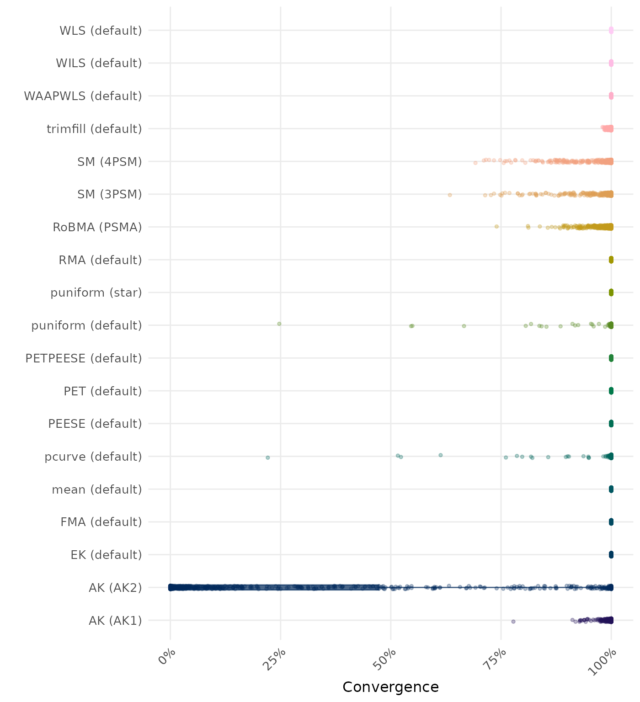
Values lower than -0.5 or larger than 0.5 are visualized as -0.5 and 0.5 respectively.

Values larger than 0.5 are visualized as 0.5.
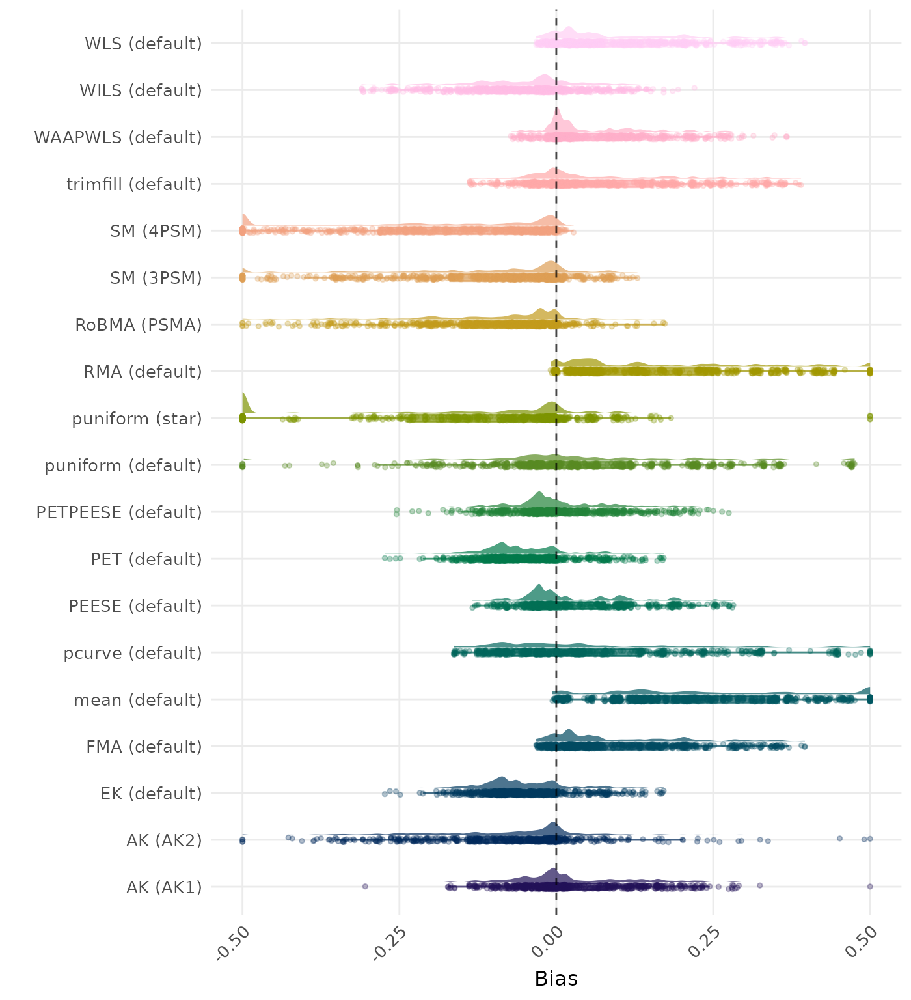

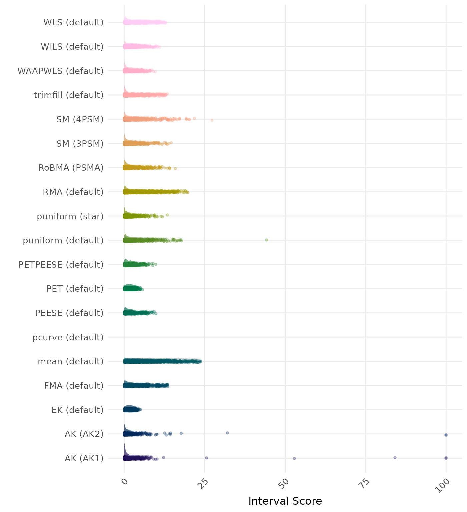

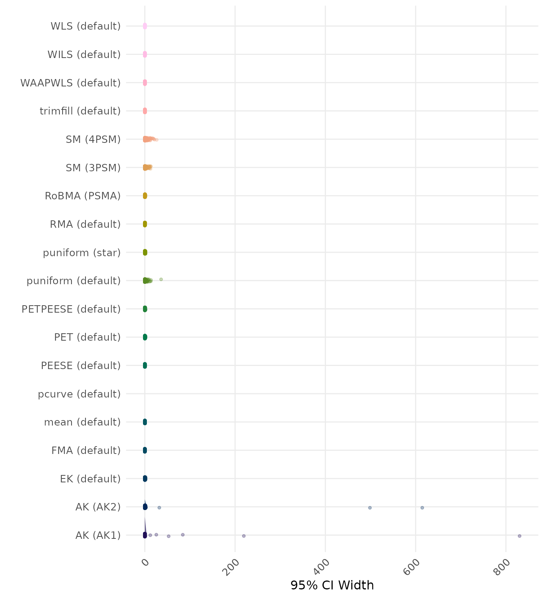
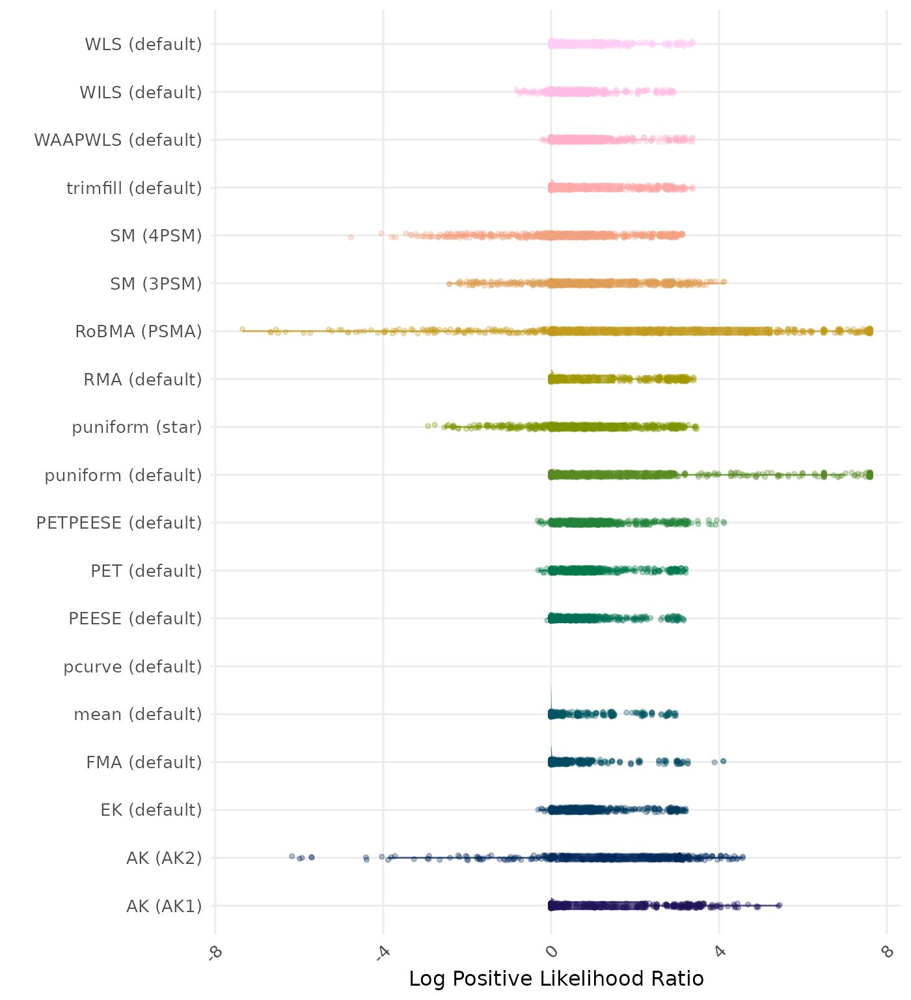

By-Condition Performance (Replacement in Case of Non-Convergence)
The results below incorporate method replacement to handle non-convergence. If a method fails to converge, its results are replaced with the results from a simpler method (e.g., random-effects meta-analysis without publication bias adjustment). This emulates what a data analyst may do in practice in case a method does not converge. However, note that these results do not correspond to “pure” method performance as they might combine multiple different methods. See Method Replacement Strategy for details of the method replacement specification.

Values lower than -0.5 or larger than 0.5 are visualized as -0.5 and 0.5 respectively.
Values larger than 0.5 are visualized as 0.5.
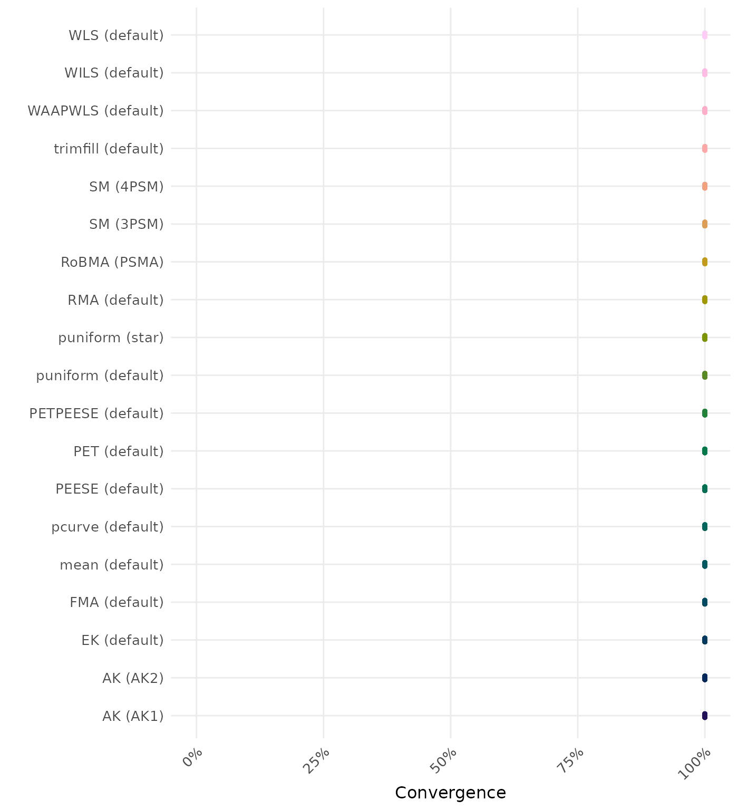
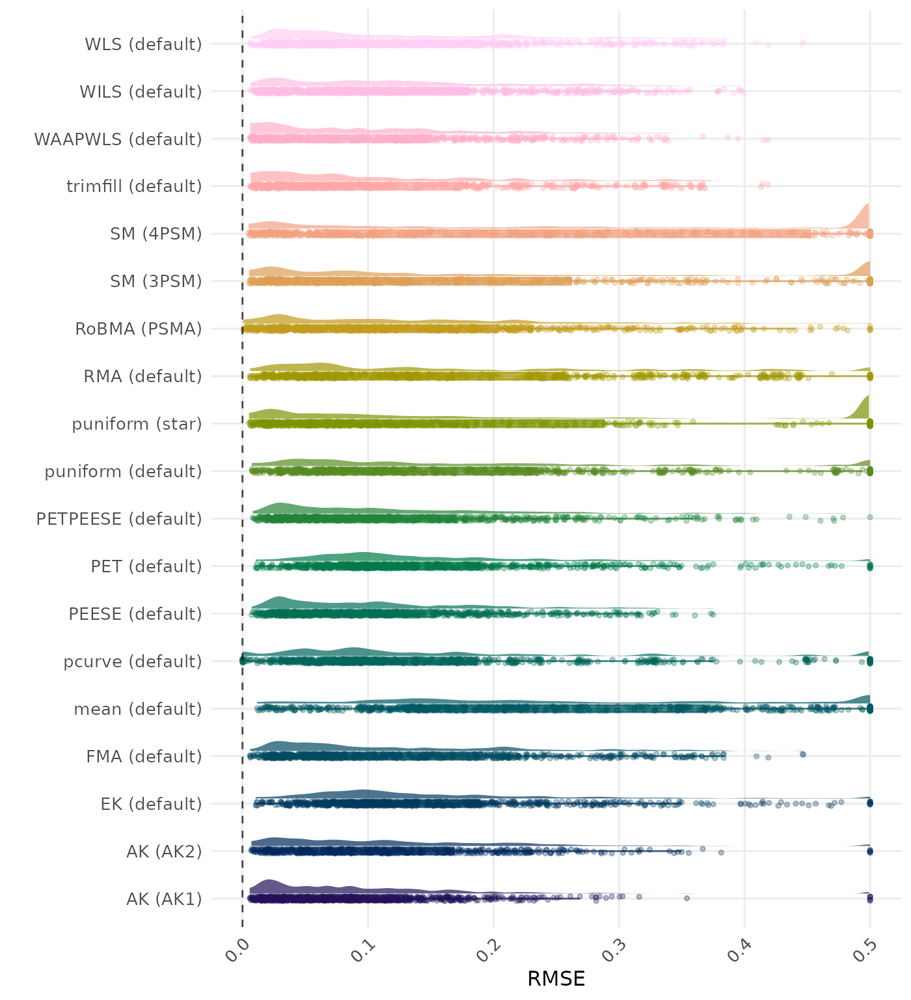
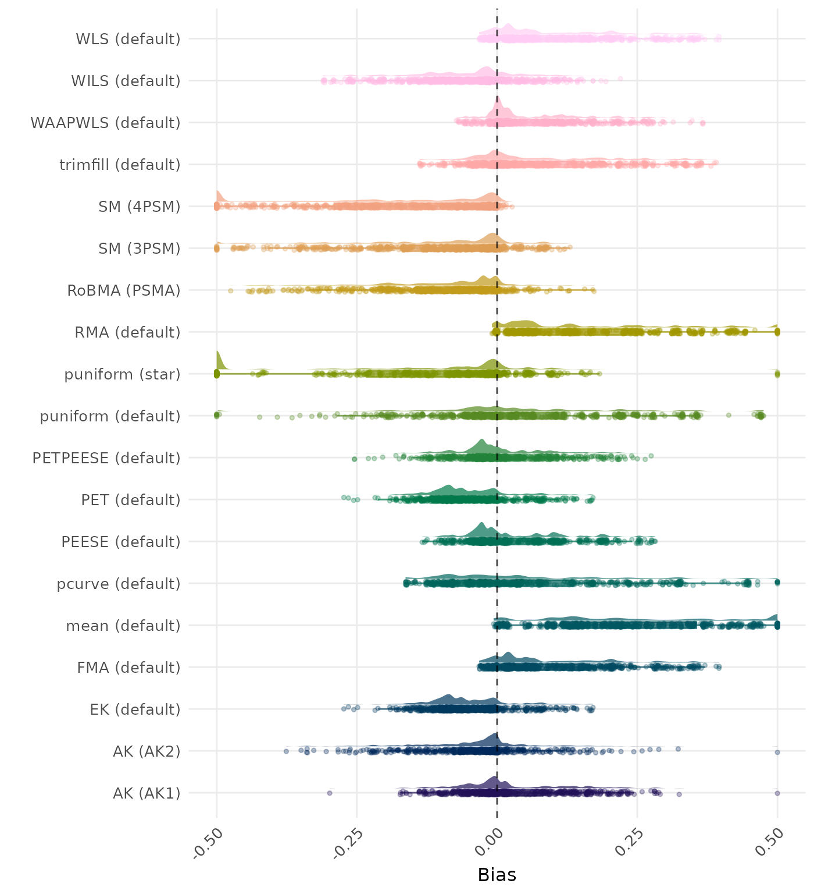
Subset: No Questionable Research Practices
These results are based on Carter2019 data-generating mechanism with a total of 252 conditions.
Average Performance
Method performance measures are aggregated across all simulated conditions to provide an overall impression of method performance. However, keep in mind that a method with a high overall ranking is not necessarily the “best” method for a particular application. To select a suitable method for your application, consider also non-aggregated performance measures in conditions most relevant to your application. (TODO: add links to non-aggregated data exploration tool)
| Rank | Method | Value | Rank | Method | Value |
|---|---|---|---|---|---|
| 1 | FMA-default | 0.004 | 1 | puniform-default | -0.001 |
| 1 | WLS-default | 0.004 | 2 | FMA-default | 0.004 |
| 3 | WAAPWLS-default | -0.007 | 2 | WLS-default | 0.004 |
| 4 | puniform-default | -0.014 | 4 | WAAPWLS-default | -0.007 |
| 5 | trimfill-default | -0.025 | 5 | trimfill-default | -0.025 |
| 6 | RMA-default | 0.028 | 6 | RMA-default | 0.028 |
| 7 | AK-AK1 | -0.031 | 7 | AK-AK1 | -0.032 |
| 8 | PEESE-default | -0.038 | 8 | PEESE-default | -0.038 |
| 9 | PETPEESE-default | -0.052 | 9 | PETPEESE-default | -0.052 |
| 10 | EK-default | -0.073 | 10 | pcurve-default | 0.063 |
| 11 | PET-default | -0.073 | 11 | EK-default | -0.073 |
| 12 | pcurve-default | 0.075 | 12 | PET-default | -0.073 |
| 13 | mean-default | 0.075 | 13 | AK-AK2 | -0.074 |
| 14 | SM-3PSM | -0.085 | 14 | mean-default | 0.075 |
| 15 | RoBMA-PSMA | -0.088 | 15 | SM-3PSM | -0.085 |
| 16 | AK-AK2 | -0.101 | 16 | RoBMA-PSMA | -0.087 |
| 17 | SM-4PSM | -0.106 | 17 | SM-4PSM | -0.106 |
| 18 | WILS-default | -0.219 | 18 | WILS-default | -0.219 |
| 19 | puniform-star | -4.095 | 19 | puniform-star | -4.095 |
| Rank | Method | Value | Rank | Method | Value |
|---|---|---|---|---|---|
| 1 | RMA-default | 0.057 | 1 | RMA-default | 0.057 |
| 2 | FMA-default | 0.063 | 2 | FMA-default | 0.063 |
| 2 | WLS-default | 0.063 | 2 | WLS-default | 0.063 |
| 4 | trimfill-default | 0.063 | 4 | trimfill-default | 0.063 |
| 5 | WAAPWLS-default | 0.077 | 5 | WAAPWLS-default | 0.077 |
| 6 | PEESE-default | 0.094 | 6 | PEESE-default | 0.094 |
| 7 | mean-default | 0.104 | 7 | mean-default | 0.104 |
| 8 | RoBMA-PSMA | 0.109 | 8 | RoBMA-PSMA | 0.108 |
| 9 | PETPEESE-default | 0.118 | 9 | PETPEESE-default | 0.118 |
| 10 | SM-3PSM | 0.134 | 10 | SM-3PSM | 0.134 |
| 11 | EK-default | 0.161 | 11 | EK-default | 0.161 |
| 12 | PET-default | 0.161 | 12 | PET-default | 0.161 |
| 13 | SM-4PSM | 0.196 | 13 | SM-4PSM | 0.198 |
| 14 | pcurve-default | 0.235 | 14 | pcurve-default | 0.222 |
| 15 | AK-AK2 | 0.246 | 15 | WILS-default | 0.253 |
| 16 | WILS-default | 0.253 | 16 | AK-AK1 | 0.289 |
| 17 | AK-AK1 | 0.297 | 17 | AK-AK2 | 0.356 |
| 18 | puniform-default | 0.952 | 18 | puniform-default | 0.862 |
| 19 | puniform-star | 46.988 | 19 | puniform-star | 46.988 |
| Rank | Method | Value | Rank | Method | Value |
|---|---|---|---|---|---|
| 1 | WAAPWLS-default | 0.798 | 1 | WAAPWLS-default | 0.798 |
| 2 | trimfill-default | 0.749 | 2 | trimfill-default | 0.748 |
| 3 | RMA-default | 0.736 | 3 | RMA-default | 0.736 |
| 4 | AK-AK1 | 0.711 | 4 | AK-AK1 | 0.711 |
| 5 | WLS-default | 0.698 | 5 | WLS-default | 0.698 |
| 6 | puniform-star | 0.656 | 6 | AK-AK2 | 0.659 |
| 7 | AK-AK2 | 0.653 | 7 | puniform-star | 0.656 |
| 8 | RoBMA-PSMA | 0.639 | 8 | RoBMA-PSMA | 0.640 |
| 9 | SM-4PSM | 0.619 | 9 | SM-4PSM | 0.619 |
| 10 | PEESE-default | 0.618 | 10 | PEESE-default | 0.618 |
| 11 | PETPEESE-default | 0.615 | 11 | PETPEESE-default | 0.615 |
| 12 | puniform-default | 0.606 | 12 | puniform-default | 0.607 |
| 13 | SM-3PSM | 0.595 | 13 | SM-3PSM | 0.595 |
| 14 | EK-default | 0.568 | 14 | EK-default | 0.568 |
| 15 | mean-default | 0.556 | 15 | mean-default | 0.556 |
| 16 | PET-default | 0.554 | 16 | PET-default | 0.554 |
| 17 | FMA-default | 0.530 | 17 | FMA-default | 0.530 |
| 18 | WILS-default | 0.260 | 18 | WILS-default | 0.261 |
| 19 | pcurve-default | NaN | 19 | pcurve-default | NaN |
| Rank | Method | Value | Rank | Method | Value |
|---|---|---|---|---|---|
| 1 | FMA-default | 0.096 | 1 | FMA-default | 0.096 |
| 2 | WLS-default | 0.143 | 2 | WLS-default | 0.143 |
| 3 | WILS-default | 0.149 | 3 | WILS-default | 0.149 |
| 4 | trimfill-default | 0.175 | 4 | trimfill-default | 0.175 |
| 5 | RMA-default | 0.177 | 5 | RMA-default | 0.177 |
| 6 | PEESE-default | 0.184 | 6 | PEESE-default | 0.184 |
| 7 | WAAPWLS-default | 0.206 | 7 | WAAPWLS-default | 0.206 |
| 8 | RoBMA-PSMA | 0.211 | 8 | RoBMA-PSMA | 0.210 |
| 9 | mean-default | 0.219 | 9 | mean-default | 0.219 |
| 10 | PETPEESE-default | 0.237 | 10 | PETPEESE-default | 0.237 |
| 11 | SM-3PSM | 0.268 | 11 | SM-3PSM | 0.264 |
| 12 | puniform-star | 0.270 | 12 | puniform-star | 0.270 |
| 13 | PET-default | 0.296 | 13 | PET-default | 0.296 |
| 14 | EK-default | 0.322 | 14 | EK-default | 0.322 |
| 15 | SM-4PSM | 0.455 | 15 | SM-4PSM | 0.410 |
| 16 | puniform-default | 0.976 | 16 | puniform-default | 0.845 |
| 17 | AK-AK2 | 4.827 | 17 | AK-AK1 | 4.810 |
| 18 | AK-AK1 | 5.038 | 18 | AK-AK2 | 5.426 |
| 19 | pcurve-default | NaN | 19 | pcurve-default | NaN |
| Rank | Method | Value | Rank | Method | Value |
|---|---|---|---|---|---|
| 1 | RMA-default | 0.419 | 1 | RMA-default | 0.419 |
| 2 | WLS-default | 0.511 | 2 | WLS-default | 0.511 |
| 3 | trimfill-default | 0.533 | 3 | trimfill-default | 0.533 |
| 4 | WAAPWLS-default | 0.539 | 4 | WAAPWLS-default | 0.539 |
| 5 | FMA-default | 0.863 | 5 | FMA-default | 0.863 |
| 6 | PEESE-default | 0.977 | 6 | PEESE-default | 0.977 |
| 7 | puniform-star | 1.130 | 7 | puniform-star | 1.130 |
| 8 | PETPEESE-default | 1.153 | 8 | PETPEESE-default | 1.153 |
| 9 | mean-default | 1.335 | 9 | mean-default | 1.335 |
| 10 | RoBMA-PSMA | 1.385 | 10 | RoBMA-PSMA | 1.363 |
| 11 | SM-3PSM | 1.563 | 11 | SM-3PSM | 1.559 |
| 12 | EK-default | 1.711 | 12 | EK-default | 1.711 |
| 13 | SM-4PSM | 1.762 | 13 | SM-4PSM | 1.717 |
| 14 | PET-default | 1.784 | 14 | PET-default | 1.784 |
| 15 | puniform-default | 2.690 | 15 | puniform-default | 2.538 |
| 16 | AK-AK1 | 5.500 | 16 | AK-AK1 | 5.273 |
| 17 | AK-AK2 | 5.978 | 17 | AK-AK2 | 6.407 |
| 18 | WILS-default | 6.939 | 18 | WILS-default | 6.932 |
| 19 | pcurve-default | NaN | 19 | pcurve-default | NaN |
| Rank | Method | Value | Rank | Method | Value |
|---|---|---|---|---|---|
| 1 | AK-AK1 | 0.114 | 1 | AK-AK1 | 0.114 |
| 2 | RoBMA-PSMA | 0.143 | 2 | RoBMA-PSMA | 0.143 |
| 3 | trimfill-default | 0.155 | 3 | trimfill-default | 0.155 |
| 4 | RMA-default | 0.186 | 4 | RMA-default | 0.186 |
| 5 | WAAPWLS-default | 0.220 | 5 | WAAPWLS-default | 0.220 |
| 6 | WLS-default | 0.227 | 6 | WLS-default | 0.227 |
| 7 | PETPEESE-default | 0.302 | 7 | PETPEESE-default | 0.302 |
| 8 | AK-AK2 | 0.312 | 8 | AK-AK2 | 0.307 |
| 9 | PEESE-default | 0.312 | 9 | PEESE-default | 0.312 |
| 10 | puniform-star | 0.319 | 10 | puniform-star | 0.319 |
| 11 | mean-default | 0.332 | 11 | mean-default | 0.332 |
| 12 | EK-default | 0.348 | 12 | EK-default | 0.348 |
| 12 | PET-default | 0.348 | 12 | PET-default | 0.348 |
| 14 | puniform-default | 0.378 | 14 | puniform-default | 0.377 |
| 15 | SM-4PSM | 0.413 | 15 | SM-4PSM | 0.413 |
| 16 | SM-3PSM | 0.428 | 16 | SM-3PSM | 0.428 |
| 17 | FMA-default | 0.442 | 17 | FMA-default | 0.442 |
| 18 | WILS-default | 0.559 | 18 | WILS-default | 0.559 |
| 19 | pcurve-default | NaN | 19 | pcurve-default | NaN |
| Rank | Method | Value | Rank | Method | Value |
|---|---|---|---|---|---|
| 1 | FMA-default | 0.985 | 1 | FMA-default | 0.985 |
| 2 | RMA-default | 0.969 | 2 | RMA-default | 0.969 |
| 3 | mean-default | 0.966 | 3 | mean-default | 0.966 |
| 4 | WLS-default | 0.964 | 4 | WLS-default | 0.964 |
| 5 | trimfill-default | 0.949 | 5 | trimfill-default | 0.949 |
| 6 | AK-AK1 | 0.949 | 6 | AK-AK1 | 0.948 |
| 7 | PEESE-default | 0.915 | 7 | PEESE-default | 0.915 |
| 8 | puniform-default | 0.885 | 8 | puniform-default | 0.885 |
| 9 | WAAPWLS-default | 0.858 | 9 | WAAPWLS-default | 0.858 |
| 10 | PETPEESE-default | 0.845 | 10 | PETPEESE-default | 0.845 |
| 11 | EK-default | 0.831 | 11 | EK-default | 0.831 |
| 11 | PET-default | 0.831 | 11 | PET-default | 0.831 |
| 13 | SM-3PSM | 0.819 | 13 | SM-3PSM | 0.821 |
| 14 | puniform-star | 0.811 | 14 | puniform-star | 0.811 |
| 15 | WILS-default | 0.770 | 15 | AK-AK2 | 0.795 |
| 16 | SM-4PSM | 0.732 | 16 | WILS-default | 0.771 |
| 17 | AK-AK2 | 0.711 | 17 | SM-4PSM | 0.739 |
| 18 | RoBMA-PSMA | 0.674 | 18 | RoBMA-PSMA | 0.676 |
| 19 | pcurve-default | NaN | 19 | pcurve-default | NaN |
The positive likelihood ratio indicates how much a significant test result changes the odds of H1 versus H0.
| Rank | Method | Log Value | Rank | Method | Log Value |
|---|---|---|---|---|---|
| 1 | RoBMA-PSMA | 3.582 | 1 | RoBMA-PSMA | 3.669 |
| 2 | AK-AK1 | 2.778 | 2 | AK-AK1 | 2.770 |
| 3 | RMA-default | 2.193 | 3 | RMA-default | 2.193 |
| 4 | trimfill-default | 2.152 | 4 | trimfill-default | 2.152 |
| 5 | puniform-default | 1.977 | 5 | puniform-default | 1.961 |
| 6 | mean-default | 1.750 | 6 | mean-default | 1.750 |
| 7 | WLS-default | 1.676 | 7 | WLS-default | 1.676 |
| 8 | WAAPWLS-default | 1.563 | 8 | WAAPWLS-default | 1.563 |
| 9 | puniform-star | 1.441 | 9 | AK-AK2 | 1.556 |
| 10 | PEESE-default | 1.327 | 10 | puniform-star | 1.441 |
| 11 | PETPEESE-default | 1.272 | 11 | PEESE-default | 1.327 |
| 12 | AK-AK2 | 1.240 | 12 | PETPEESE-default | 1.272 |
| 13 | SM-3PSM | 1.112 | 13 | SM-3PSM | 1.120 |
| 14 | FMA-default | 1.095 | 14 | FMA-default | 1.095 |
| 15 | EK-default | 1.066 | 15 | EK-default | 1.066 |
| 15 | PET-default | 1.066 | 15 | PET-default | 1.066 |
| 17 | SM-4PSM | 0.893 | 17 | SM-4PSM | 0.915 |
| 18 | WILS-default | 0.593 | 18 | WILS-default | 0.594 |
| 19 | pcurve-default | NaN | 19 | pcurve-default | NaN |
The negative likelihood ratio indicates how much a non-significant test result changes the odds of H1 versus H0.
| Rank | Method | Log Value | Rank | Method | Log Value |
|---|---|---|---|---|---|
| 1 | RMA-default | -6.535 | 1 | RMA-default | -6.535 |
| 2 | AK-AK1 | -6.401 | 2 | AK-AK1 | -6.404 |
| 3 | WLS-default | -6.229 | 3 | WLS-default | -6.229 |
| 4 | trimfill-default | -6.222 | 4 | trimfill-default | -6.224 |
| 5 | FMA-default | -6.193 | 5 | FMA-default | -6.193 |
| 6 | mean-default | -5.689 | 6 | mean-default | -5.689 |
| 7 | PEESE-default | -5.202 | 7 | PEESE-default | -5.202 |
| 8 | WAAPWLS-default | -4.263 | 8 | WAAPWLS-default | -4.263 |
| 9 | PETPEESE-default | -4.199 | 9 | PETPEESE-default | -4.199 |
| 10 | puniform-default | -4.028 | 10 | puniform-default | -4.030 |
| 11 | EK-default | -3.956 | 11 | EK-default | -3.956 |
| 11 | PET-default | -3.956 | 11 | PET-default | -3.956 |
| 13 | puniform-star | -3.690 | 13 | puniform-star | -3.690 |
| 14 | RoBMA-PSMA | -3.314 | 14 | AK-AK2 | -3.483 |
| 15 | SM-3PSM | -3.252 | 15 | RoBMA-PSMA | -3.326 |
| 16 | SM-4PSM | -2.447 | 16 | SM-3PSM | -3.259 |
| 17 | AK-AK2 | -1.757 | 17 | SM-4PSM | -2.519 |
| 18 | WILS-default | -1.196 | 18 | WILS-default | -1.198 |
| 19 | pcurve-default | NaN | 19 | pcurve-default | NaN |
A combined method rank is the mean method rank across all performance measures.
| Rank | Method | Mean Rank | Rank | Method | Mean Rank |
|---|---|---|---|---|---|
| 1 | RMA-default | 2.889 | 1 | RMA-default | 2.889 |
| 2 | WLS-default | 3.556 | 2 | WLS-default | 3.667 |
| 3 | trimfill-default | 3.778 | 3 | trimfill-default | 3.778 |
| 4 | WAAPWLS-default | 5.556 | 4 | WAAPWLS-default | 5.667 |
| 5 | FMA-default | 7.000 | 5 | FMA-default | 7.111 |
| 6 | PEESE-default | 7.667 | 6 | PEESE-default | 7.778 |
| 7 | AK-AK1 | 8.111 | 7 | AK-AK1 | 7.889 |
| 8 | mean-default | 8.778 | 8 | mean-default | 8.889 |
| 9 | PETPEESE-default | 9.333 | 9 | PETPEESE-default | 9.444 |
| 9 | RoBMA-PSMA | 9.333 | 10 | RoBMA-PSMA | 9.556 |
| 11 | puniform-default | 11.333 | 11 | puniform-default | 11.000 |
| 12 | puniform-star | 12.111 | 12 | EK-default | 12.333 |
| 13 | EK-default | 12.222 | 12 | puniform-star | 12.333 |
| 14 | PET-default | 12.778 | 14 | PET-default | 12.889 |
| 15 | SM-3PSM | 12.889 | 15 | AK-AK2 | 13.000 |
| 16 | AK-AK2 | 14.000 | 16 | SM-3PSM | 13.111 |
| 17 | SM-4PSM | 14.556 | 17 | SM-4PSM | 14.778 |
| 18 | WILS-default | 15.778 | 18 | WILS-default | 15.778 |
| 19 | pcurve-default | 17.667 | 19 | pcurve-default | 17.444 |
By-Condition Performance (Conditional on Method Convergence)
The results below are conditional on method convergence. Note that the methods might differ in convergence rate and are therefore not compared on the same data sets.


Values lower than -0.5 or larger than 0.5 are visualized as -0.5 and 0.5 respectively.
Values larger than 0.5 are visualized as 0.5.
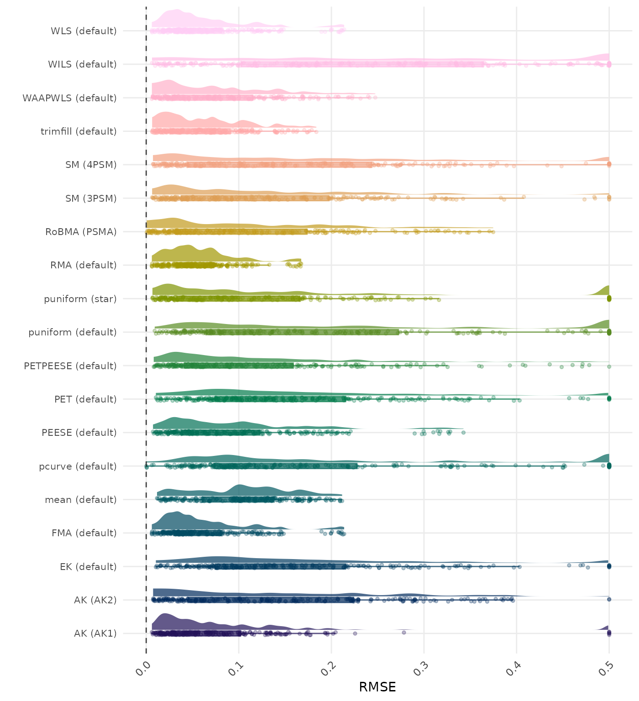

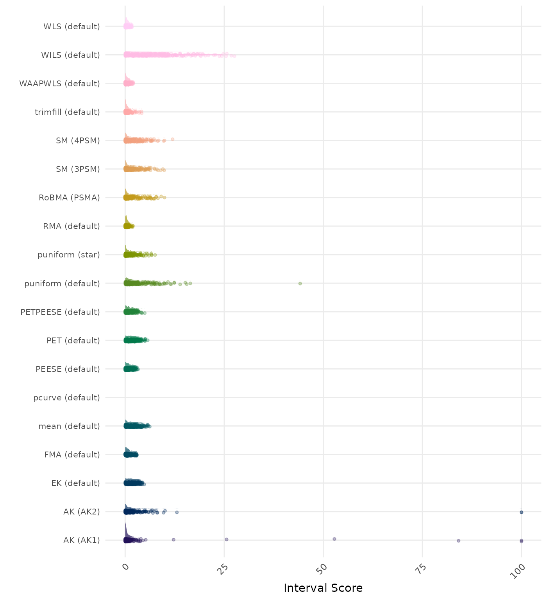
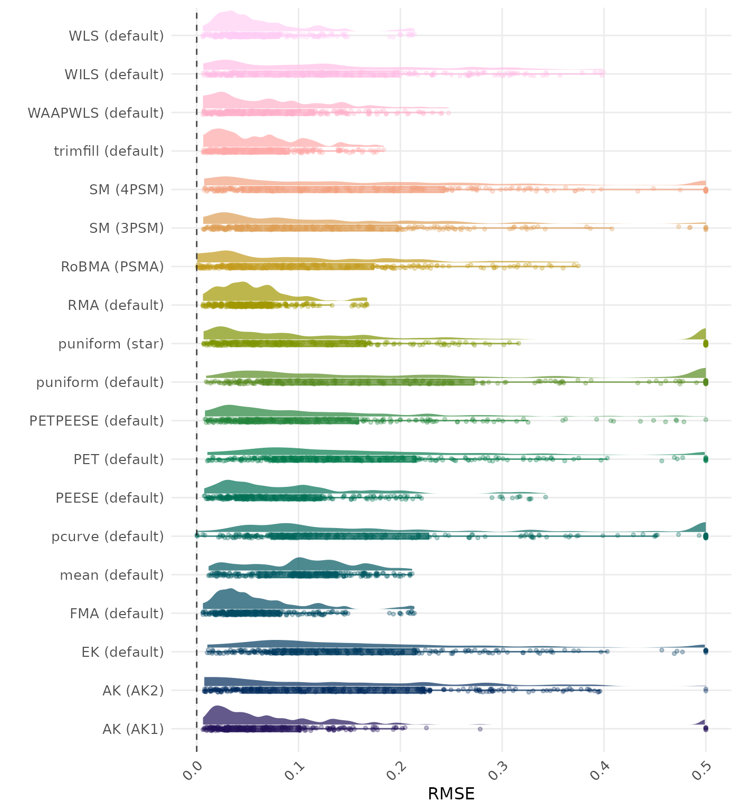
By-Condition Performance (Replacement in Case of Non-Convergence)
The results below incorporate method replacement to handle non-convergence. If a method fails to converge, its results are replaced with the results from a simpler method (e.g., random-effects meta-analysis without publication bias adjustment). This emulates what a data analyst may do in practice in case a method does not converge. However, note that these results do not correspond to “pure” method performance as they might combine multiple different methods. See Method Replacement Strategy for details of the method replacement specification.


Values lower than -0.5 or larger than 0.5 are visualized as -0.5 and 0.5 respectively.

Values larger than 0.5 are visualized as 0.5.


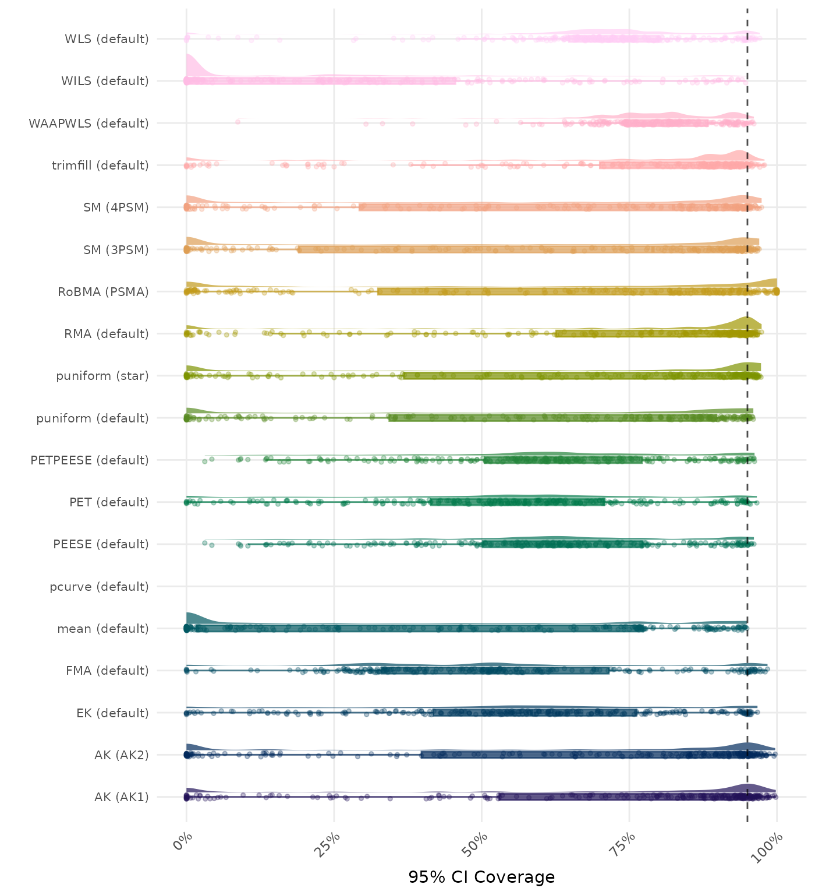
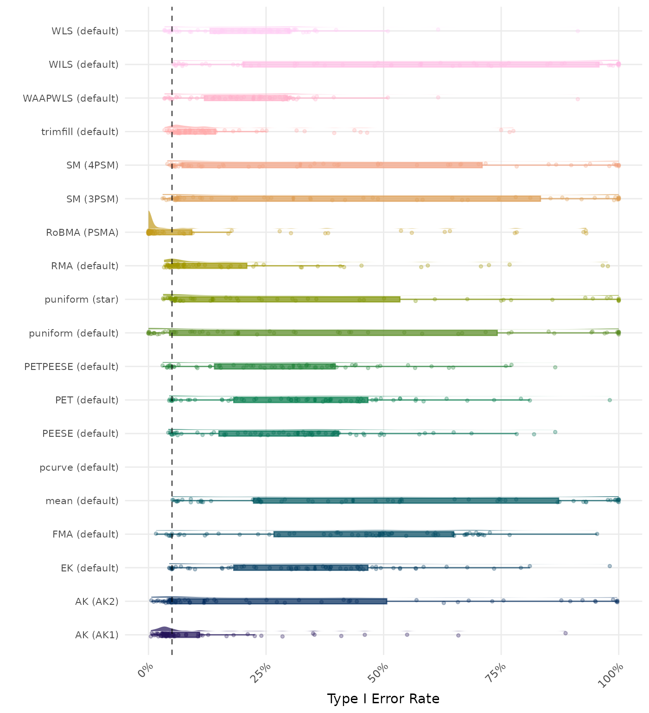
Subset: Medium Questionable Research Practices
These results are based on Carter2019 data-generating mechanism with a total of 252 conditions.
Average Performance
Method performance measures are aggregated across all simulated conditions to provide an overall impression of method performance. However, keep in mind that a method with a high overall ranking is not necessarily the “best” method for a particular application. To select a suitable method for your application, consider also non-aggregated performance measures in conditions most relevant to your application. (TODO: add links to non-aggregated data exploration tool)
| Rank | Method | Value | Rank | Method | Value |
|---|---|---|---|---|---|
| 1 | PETPEESE-default | 0.011 | 1 | PETPEESE-default | 0.011 |
| 2 | AK-AK1 | 0.036 | 2 | AK-AK2 | -0.018 |
| 3 | PEESE-default | 0.037 | 3 | AK-AK1 | 0.036 |
| 4 | pcurve-default | 0.042 | 4 | PEESE-default | 0.037 |
| 5 | puniform-default | 0.045 | 5 | pcurve-default | 0.042 |
| 6 | EK-default | -0.052 | 6 | puniform-default | 0.046 |
| 7 | PET-default | -0.052 | 7 | EK-default | -0.052 |
| 8 | WAAPWLS-default | 0.068 | 8 | PET-default | -0.052 |
| 9 | AK-AK2 | -0.086 | 9 | WAAPWLS-default | 0.068 |
| 10 | SM-3PSM | -0.090 | 10 | SM-3PSM | -0.084 |
| 11 | trimfill-default | 0.090 | 11 | RoBMA-PSMA | -0.085 |
| 12 | RoBMA-PSMA | -0.091 | 12 | trimfill-default | 0.090 |
| 13 | FMA-default | 0.112 | 13 | FMA-default | 0.112 |
| 13 | WLS-default | 0.112 | 13 | WLS-default | 0.112 |
| 15 | RMA-default | 0.183 | 15 | RMA-default | 0.183 |
| 16 | SM-4PSM | -0.202 | 16 | SM-4PSM | -0.204 |
| 17 | WILS-default | -0.244 | 17 | WILS-default | -0.244 |
| 18 | mean-default | 0.277 | 18 | mean-default | 0.277 |
| 19 | puniform-star | -23.968 | 19 | puniform-star | -23.968 |
| Rank | Method | Value | Rank | Method | Value |
|---|---|---|---|---|---|
| 1 | AK-AK1 | 0.087 | 1 | AK-AK1 | 0.087 |
| 2 | PEESE-default | 0.101 | 2 | PEESE-default | 0.101 |
| 3 | WAAPWLS-default | 0.107 | 3 | AK-AK2 | 0.105 |
| 4 | PETPEESE-default | 0.111 | 4 | WAAPWLS-default | 0.107 |
| 5 | trimfill-default | 0.117 | 5 | PETPEESE-default | 0.111 |
| 6 | FMA-default | 0.133 | 6 | trimfill-default | 0.117 |
| 6 | WLS-default | 0.133 | 7 | FMA-default | 0.133 |
| 8 | RoBMA-PSMA | 0.135 | 7 | WLS-default | 0.133 |
| 9 | AK-AK2 | 0.136 | 9 | RoBMA-PSMA | 0.137 |
| 10 | pcurve-default | 0.143 | 10 | pcurve-default | 0.142 |
| 11 | EK-default | 0.145 | 11 | EK-default | 0.145 |
| 12 | PET-default | 0.145 | 12 | PET-default | 0.145 |
| 13 | RMA-default | 0.191 | 13 | RMA-default | 0.191 |
| 14 | puniform-default | 0.259 | 14 | puniform-default | 0.251 |
| 15 | SM-3PSM | 0.272 | 15 | SM-3PSM | 0.263 |
| 16 | mean-default | 0.284 | 16 | mean-default | 0.284 |
| 17 | WILS-default | 0.290 | 17 | WILS-default | 0.290 |
| 18 | SM-4PSM | 0.444 | 18 | SM-4PSM | 0.462 |
| 19 | puniform-star | 147.205 | 19 | puniform-star | 147.205 |
| Rank | Method | Value | Rank | Method | Value |
|---|---|---|---|---|---|
| 1 | AK-AK2 | 0.735 | 1 | AK-AK2 | 0.686 |
| 2 | RoBMA-PSMA | 0.653 | 2 | RoBMA-PSMA | 0.650 |
| 3 | SM-3PSM | 0.640 | 3 | SM-3PSM | 0.635 |
| 4 | puniform-star | 0.633 | 4 | puniform-star | 0.633 |
| 5 | SM-4PSM | 0.619 | 5 | SM-4PSM | 0.614 |
| 6 | WAAPWLS-default | 0.570 | 6 | WAAPWLS-default | 0.570 |
| 7 | AK-AK1 | 0.553 | 7 | AK-AK1 | 0.551 |
| 8 | puniform-default | 0.529 | 8 | puniform-default | 0.529 |
| 9 | PETPEESE-default | 0.512 | 9 | PETPEESE-default | 0.512 |
| 10 | EK-default | 0.468 | 10 | EK-default | 0.468 |
| 11 | PET-default | 0.453 | 11 | PET-default | 0.453 |
| 12 | PEESE-default | 0.446 | 12 | PEESE-default | 0.446 |
| 13 | trimfill-default | 0.427 | 13 | trimfill-default | 0.426 |
| 14 | WLS-default | 0.275 | 14 | WLS-default | 0.275 |
| 15 | FMA-default | 0.213 | 15 | FMA-default | 0.213 |
| 16 | RMA-default | 0.191 | 16 | RMA-default | 0.191 |
| 17 | WILS-default | 0.156 | 17 | WILS-default | 0.157 |
| 18 | mean-default | 0.092 | 18 | mean-default | 0.092 |
| 19 | pcurve-default | NaN | 19 | pcurve-default | NaN |
| Rank | Method | Value | Rank | Method | Value |
|---|---|---|---|---|---|
| 1 | FMA-default | 0.089 | 1 | FMA-default | 0.089 |
| 2 | WLS-default | 0.134 | 2 | WLS-default | 0.134 |
| 3 | PEESE-default | 0.150 | 3 | PEESE-default | 0.150 |
| 4 | trimfill-default | 0.160 | 4 | trimfill-default | 0.160 |
| 5 | RMA-default | 0.164 | 5 | RMA-default | 0.164 |
| 6 | AK-AK1 | 0.168 | 6 | AK-AK1 | 0.168 |
| 7 | WILS-default | 0.176 | 7 | WILS-default | 0.176 |
| 8 | PETPEESE-default | 0.184 | 8 | PETPEESE-default | 0.184 |
| 9 | WAAPWLS-default | 0.198 | 9 | WAAPWLS-default | 0.198 |
| 10 | mean-default | 0.207 | 10 | mean-default | 0.207 |
| 11 | PET-default | 0.237 | 11 | PET-default | 0.237 |
| 12 | EK-default | 0.257 | 12 | EK-default | 0.257 |
| 13 | RoBMA-PSMA | 0.288 | 13 | AK-AK2 | 0.266 |
| 14 | puniform-star | 0.332 | 14 | RoBMA-PSMA | 0.286 |
| 15 | puniform-default | 0.375 | 15 | puniform-star | 0.332 |
| 16 | AK-AK2 | 0.433 | 16 | puniform-default | 0.367 |
| 17 | SM-3PSM | 0.543 | 17 | SM-3PSM | 0.498 |
| 18 | SM-4PSM | 1.069 | 18 | SM-4PSM | 0.939 |
| 19 | pcurve-default | NaN | 19 | pcurve-default | NaN |
| Rank | Method | Value | Rank | Method | Value |
|---|---|---|---|---|---|
| 1 | AK-AK2 | 1.212 | 1 | AK-AK2 | 0.960 |
| 2 | AK-AK1 | 1.235 | 2 | AK-AK1 | 1.240 |
| 3 | puniform-star | 1.358 | 3 | puniform-star | 1.358 |
| 4 | WAAPWLS-default | 1.375 | 4 | WAAPWLS-default | 1.375 |
| 5 | PETPEESE-default | 1.437 | 5 | PETPEESE-default | 1.437 |
| 6 | PEESE-default | 1.462 | 6 | PEESE-default | 1.462 |
| 7 | SM-3PSM | 1.698 | 7 | SM-3PSM | 1.674 |
| 8 | RoBMA-PSMA | 1.724 | 8 | EK-default | 1.745 |
| 9 | EK-default | 1.745 | 9 | RoBMA-PSMA | 1.780 |
| 10 | PET-default | 1.819 | 10 | PET-default | 1.819 |
| 11 | trimfill-default | 2.200 | 11 | trimfill-default | 2.202 |
| 12 | puniform-default | 2.525 | 12 | puniform-default | 2.516 |
| 13 | WLS-default | 2.871 | 13 | WLS-default | 2.871 |
| 14 | SM-4PSM | 3.078 | 14 | SM-4PSM | 2.975 |
| 15 | FMA-default | 3.472 | 15 | FMA-default | 3.472 |
| 16 | RMA-default | 4.763 | 16 | RMA-default | 4.763 |
| 17 | mean-default | 7.522 | 17 | mean-default | 7.522 |
| 18 | WILS-default | 7.833 | 18 | WILS-default | 7.813 |
| 19 | pcurve-default | NaN | 19 | pcurve-default | NaN |
| Rank | Method | Value | Rank | Method | Value |
|---|---|---|---|---|---|
| 1 | AK-AK2 | 0.169 | 1 | RoBMA-PSMA | 0.333 |
| 2 | RoBMA-PSMA | 0.324 | 2 | PETPEESE-default | 0.357 |
| 3 | PETPEESE-default | 0.357 | 3 | PET-default | 0.397 |
| 4 | PET-default | 0.397 | 4 | EK-default | 0.397 |
| 5 | EK-default | 0.397 | 5 | puniform-default | 0.483 |
| 6 | puniform-default | 0.483 | 6 | AK-AK2 | 0.492 |
| 7 | SM-3PSM | 0.491 | 7 | SM-3PSM | 0.493 |
| 8 | WAAPWLS-default | 0.515 | 8 | WAAPWLS-default | 0.515 |
| 9 | puniform-star | 0.518 | 9 | puniform-star | 0.518 |
| 10 | SM-4PSM | 0.623 | 10 | SM-4PSM | 0.625 |
| 11 | PEESE-default | 0.684 | 11 | PEESE-default | 0.684 |
| 12 | WILS-default | 0.727 | 12 | WILS-default | 0.728 |
| 13 | trimfill-default | 0.857 | 13 | trimfill-default | 0.857 |
| 14 | AK-AK1 | 0.867 | 14 | AK-AK1 | 0.867 |
| 15 | WLS-default | 0.876 | 15 | WLS-default | 0.876 |
| 16 | RMA-default | 0.932 | 16 | RMA-default | 0.932 |
| 17 | mean-default | 0.940 | 17 | mean-default | 0.940 |
| 18 | FMA-default | 0.954 | 18 | FMA-default | 0.954 |
| 19 | pcurve-default | NaN | 19 | pcurve-default | NaN |
| Rank | Method | Value | Rank | Method | Value |
|---|---|---|---|---|---|
| 1 | FMA-default | 0.999 | 1 | FMA-default | 0.999 |
| 2 | RMA-default | 0.998 | 2 | RMA-default | 0.998 |
| 3 | mean-default | 0.998 | 3 | mean-default | 0.998 |
| 4 | trimfill-default | 0.995 | 4 | trimfill-default | 0.995 |
| 5 | WLS-default | 0.994 | 5 | WLS-default | 0.994 |
| 6 | AK-AK1 | 0.990 | 6 | AK-AK1 | 0.990 |
| 7 | PEESE-default | 0.981 | 7 | PEESE-default | 0.981 |
| 8 | WAAPWLS-default | 0.948 | 8 | WAAPWLS-default | 0.948 |
| 9 | puniform-default | 0.923 | 9 | puniform-default | 0.923 |
| 10 | PETPEESE-default | 0.915 | 10 | PETPEESE-default | 0.915 |
| 11 | EK-default | 0.900 | 11 | EK-default | 0.900 |
| 12 | PET-default | 0.900 | 12 | PET-default | 0.900 |
| 13 | SM-3PSM | 0.821 | 13 | AK-AK2 | 0.879 |
| 14 | puniform-star | 0.755 | 14 | SM-3PSM | 0.826 |
| 15 | AK-AK2 | 0.716 | 15 | puniform-star | 0.755 |
| 16 | WILS-default | 0.706 | 16 | WILS-default | 0.711 |
| 17 | SM-4PSM | 0.670 | 17 | SM-4PSM | 0.684 |
| 18 | RoBMA-PSMA | 0.629 | 18 | RoBMA-PSMA | 0.634 |
| 19 | pcurve-default | NaN | 19 | pcurve-default | NaN |
The positive likelihood ratio indicates how much a significant test result changes the odds of H1 versus H0.
| Rank | Method | Log Value | Rank | Method | Log Value |
|---|---|---|---|---|---|
| 1 | puniform-default | 1.991 | 1 | puniform-default | 1.983 |
| 2 | RoBMA-PSMA | 1.807 | 2 | RoBMA-PSMA | 1.743 |
| 3 | AK-AK2 | 1.595 | 3 | PETPEESE-default | 1.261 |
| 4 | PETPEESE-default | 1.261 | 4 | PET-default | 1.012 |
| 5 | PET-default | 1.012 | 5 | EK-default | 1.012 |
| 6 | EK-default | 1.012 | 6 | AK-AK2 | 0.847 |
| 7 | SM-3PSM | 0.833 | 7 | SM-3PSM | 0.828 |
| 8 | WAAPWLS-default | 0.665 | 8 | WAAPWLS-default | 0.665 |
| 9 | puniform-star | 0.553 | 9 | puniform-star | 0.553 |
| 10 | PEESE-default | 0.461 | 10 | PEESE-default | 0.461 |
| 11 | AK-AK1 | 0.242 | 11 | AK-AK1 | 0.241 |
| 12 | trimfill-default | 0.193 | 12 | trimfill-default | 0.193 |
| 13 | WLS-default | 0.154 | 13 | WLS-default | 0.154 |
| 14 | RMA-default | 0.088 | 14 | RMA-default | 0.088 |
| 15 | mean-default | 0.076 | 15 | mean-default | 0.076 |
| 16 | SM-4PSM | 0.057 | 16 | SM-4PSM | 0.072 |
| 17 | FMA-default | 0.053 | 17 | FMA-default | 0.053 |
| 18 | WILS-default | 0.021 | 18 | WILS-default | 0.030 |
| 19 | pcurve-default | NaN | 19 | pcurve-default | NaN |
The negative likelihood ratio indicates how much a non-significant test result changes the odds of H1 versus H0.
| Rank | Method | Log Value | Rank | Method | Log Value |
|---|---|---|---|---|---|
| 1 | WAAPWLS-default | -4.827 | 1 | WAAPWLS-default | -4.827 |
| 2 | PETPEESE-default | -4.469 | 2 | PETPEESE-default | -4.469 |
| 3 | EK-default | -4.350 | 3 | EK-default | -4.350 |
| 4 | PET-default | -4.350 | 4 | PET-default | -4.350 |
| 5 | PEESE-default | -4.272 | 5 | PEESE-default | -4.272 |
| 6 | puniform-default | -3.630 | 6 | AK-AK2 | -4.067 |
| 7 | WLS-default | -2.606 | 7 | puniform-default | -3.629 |
| 8 | SM-3PSM | -2.571 | 8 | WLS-default | -2.606 |
| 9 | trimfill-default | -2.517 | 9 | SM-3PSM | -2.590 |
| 10 | AK-AK2 | -2.109 | 10 | trimfill-default | -2.519 |
| 11 | FMA-default | -2.070 | 11 | FMA-default | -2.070 |
| 12 | puniform-star | -2.025 | 12 | puniform-star | -2.025 |
| 13 | RoBMA-PSMA | -1.921 | 13 | RoBMA-PSMA | -1.913 |
| 14 | AK-AK1 | -1.790 | 14 | AK-AK1 | -1.793 |
| 15 | RMA-default | -1.448 | 15 | RMA-default | -1.448 |
| 16 | mean-default | -1.360 | 16 | mean-default | -1.360 |
| 17 | SM-4PSM | -0.444 | 17 | SM-4PSM | -0.550 |
| 18 | WILS-default | 0.861 | 18 | WILS-default | 0.852 |
| 19 | pcurve-default | NaN | 19 | pcurve-default | NaN |
A combined method rank is the mean method rank across all performance measures.
| Rank | Method | Mean Rank | Rank | Method | Mean Rank |
|---|---|---|---|---|---|
| 1 | PETPEESE-default | 5.111 | 1 | PETPEESE-default | 5.000 |
| 2 | WAAPWLS-default | 6.111 | 2 | AK-AK2 | 5.667 |
| 3 | PEESE-default | 6.556 | 3 | WAAPWLS-default | 6.333 |
| 4 | AK-AK1 | 7.000 | 4 | PEESE-default | 6.667 |
| 5 | AK-AK2 | 7.222 | 5 | AK-AK1 | 7.111 |
| 6 | EK-default | 8.111 | 6 | EK-default | 7.889 |
| 7 | PET-default | 8.444 | 7 | PET-default | 8.333 |
| 7 | puniform-default | 8.444 | 8 | puniform-default | 8.667 |
| 9 | RoBMA-PSMA | 8.667 | 9 | RoBMA-PSMA | 8.778 |
| 10 | trimfill-default | 9.111 | 10 | trimfill-default | 9.444 |
| 11 | SM-3PSM | 9.667 | 11 | SM-3PSM | 9.889 |
| 12 | WLS-default | 9.778 | 12 | WLS-default | 10.000 |
| 13 | FMA-default | 10.778 | 13 | FMA-default | 10.889 |
| 14 | puniform-star | 11.444 | 14 | puniform-star | 11.667 |
| 15 | RMA-default | 12.444 | 15 | RMA-default | 12.444 |
| 16 | mean-default | 14.444 | 16 | mean-default | 14.444 |
| 17 | SM-4PSM | 14.556 | 17 | SM-4PSM | 14.556 |
| 18 | WILS-default | 15.556 | 18 | WILS-default | 15.556 |
| 19 | pcurve-default | 16.333 | 19 | pcurve-default | 16.444 |
By-Condition Performance (Conditional on Method Convergence)
The results below are conditional on method convergence. Note that the methods might differ in convergence rate and are therefore not compared on the same data sets.
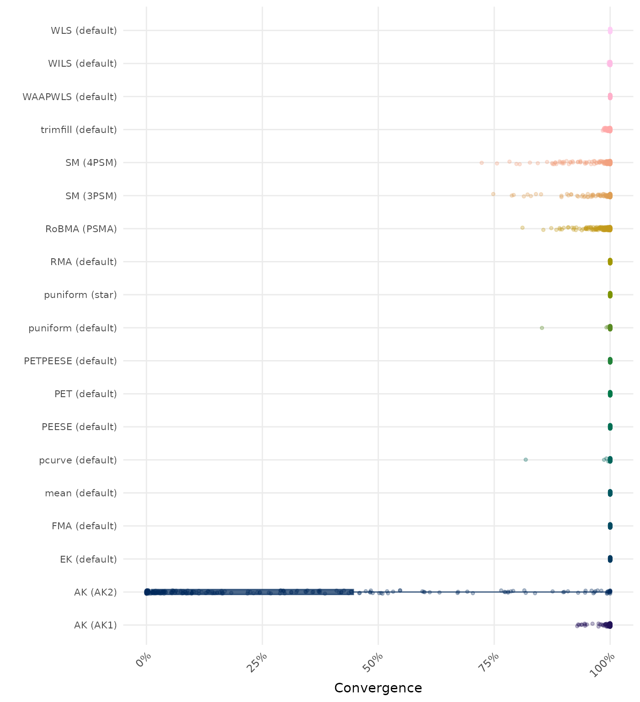

Values lower than -0.5 or larger than 0.5 are visualized as -0.5 and 0.5 respectively.
Values larger than 0.5 are visualized as 0.5.


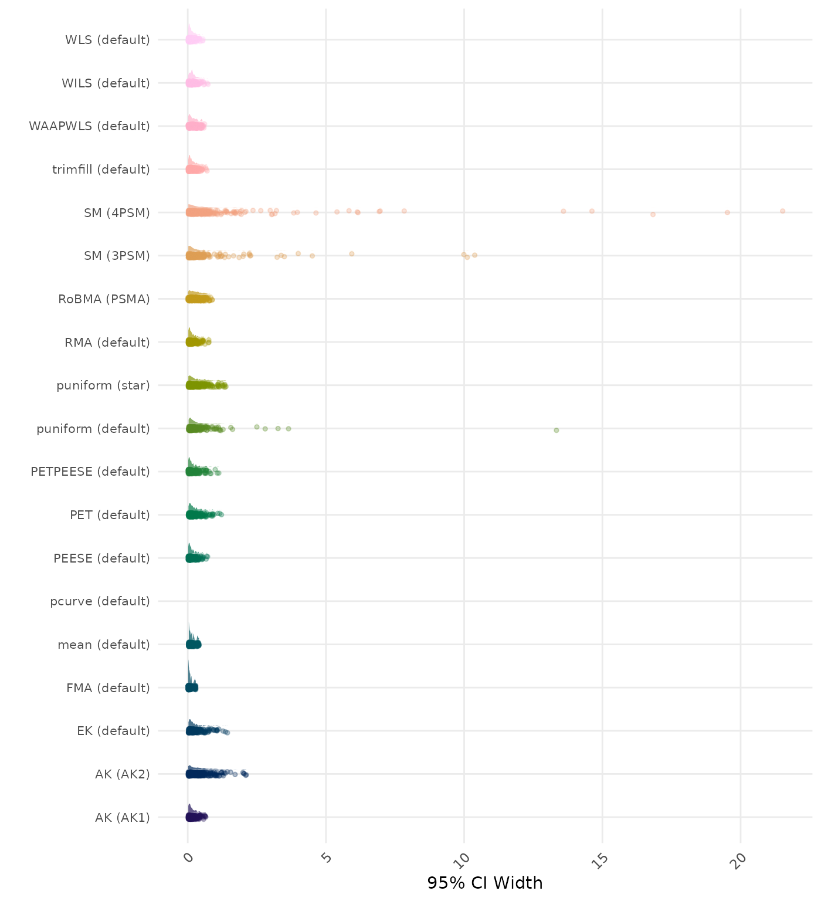
By-Condition Performance (Replacement in Case of Non-Convergence)
The results below incorporate method replacement to handle non-convergence. If a method fails to converge, its results are replaced with the results from a simpler method (e.g., random-effects meta-analysis without publication bias adjustment). This emulates what a data analyst may do in practice in case a method does not converge. However, note that these results do not correspond to “pure” method performance as they might combine multiple different methods. See Method Replacement Strategy for details of the method replacement specification.
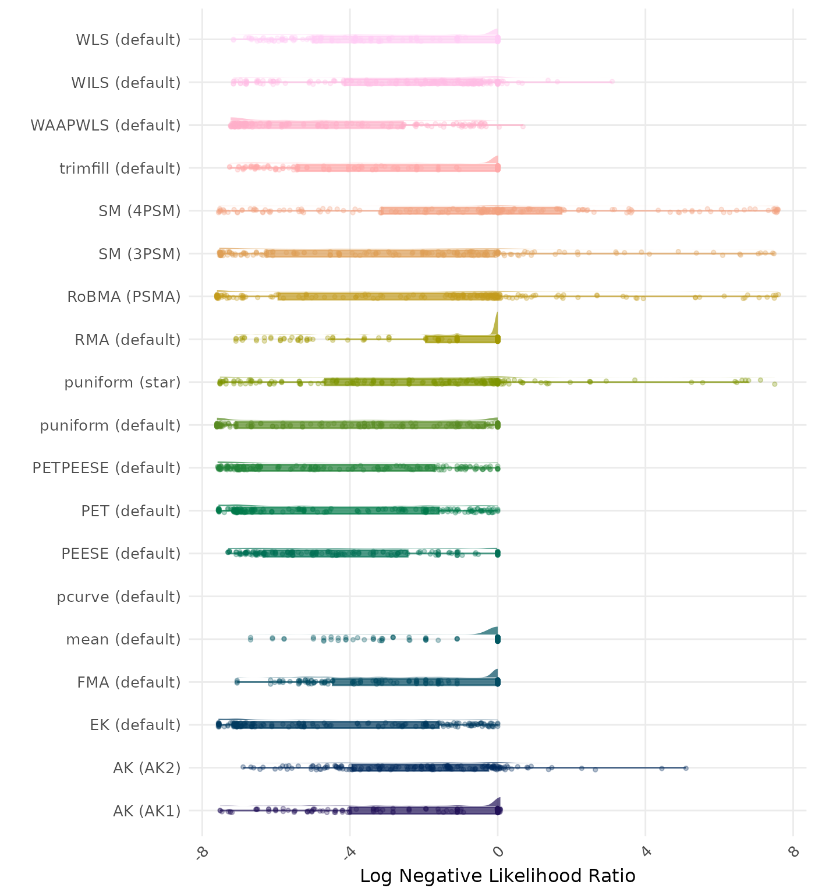
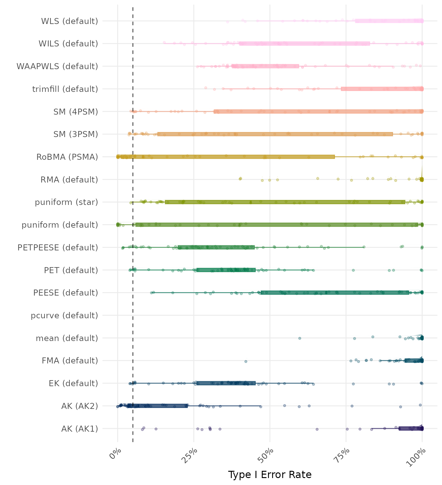
Values lower than -0.5 or larger than 0.5 are visualized as -0.5 and 0.5 respectively.
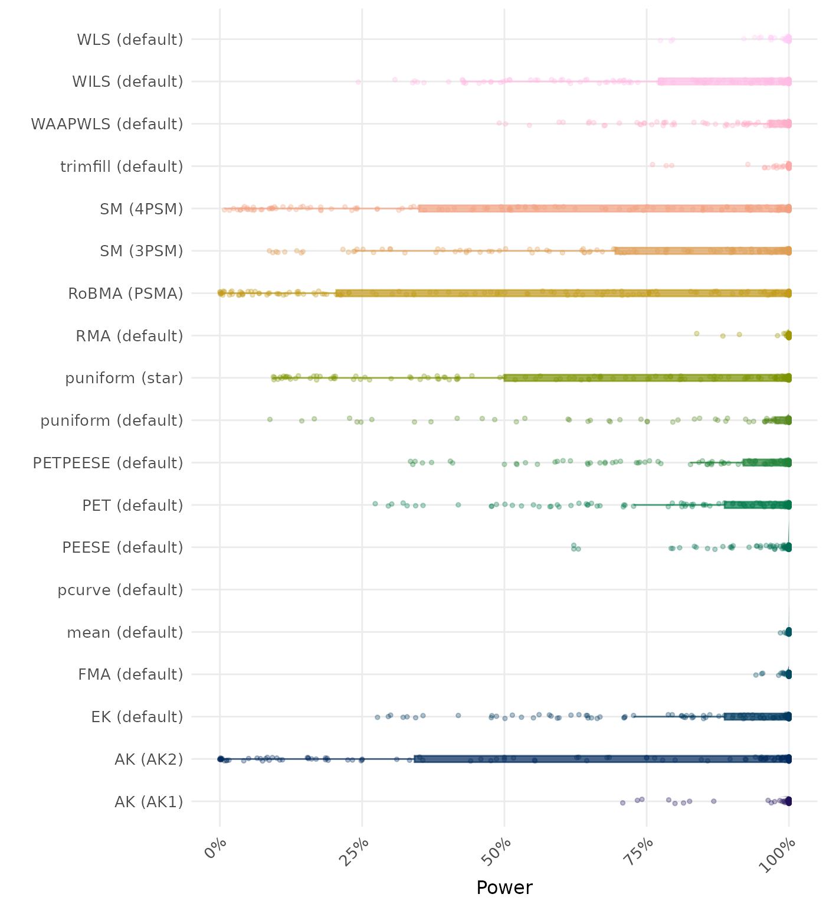
Values larger than 0.5 are visualized as 0.5.


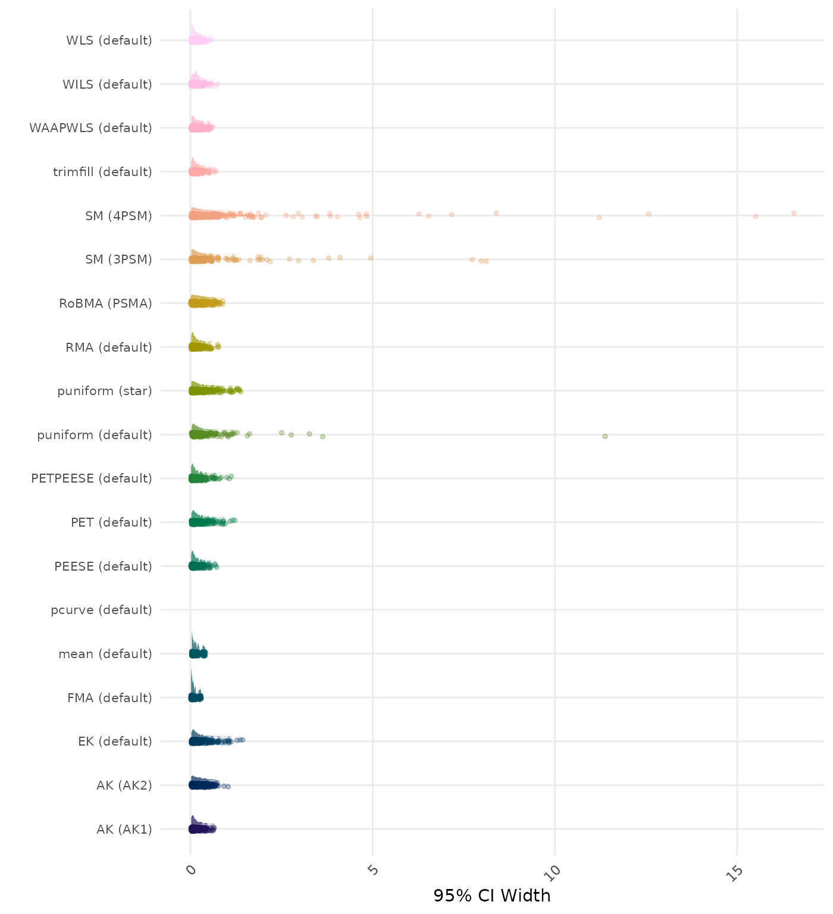
Subset: High Questionable Research Practices
These results are based on Carter2019 data-generating mechanism with a total of 252 conditions.
Average Performance
Method performance measures are aggregated across all simulated conditions to provide an overall impression of method performance. However, keep in mind that a method with a high overall ranking is not necessarily the “best” method for a particular application. To select a suitable method for your application, consider also non-aggregated performance measures in conditions most relevant to your application. (TODO: add links to non-aggregated data exploration tool)
| Rank | Method | Value | Rank | Method | Value |
|---|---|---|---|---|---|
| 1 | EK-default | -0.032 | 1 | EK-default | -0.032 |
| 2 | PET-default | -0.032 | 2 | PET-default | -0.032 |
| 3 | pcurve-default | 0.038 | 3 | pcurve-default | 0.038 |
| 4 | PETPEESE-default | 0.046 | 4 | PETPEESE-default | 0.046 |
| 5 | AK-AK2 | 0.050 | 5 | AK-AK2 | 0.046 |
| 6 | puniform-default | 0.054 | 6 | puniform-default | 0.054 |
| 7 | AK-AK1 | 0.062 | 7 | AK-AK1 | 0.062 |
| 8 | PEESE-default | 0.075 | 8 | PEESE-default | 0.075 |
| 9 | WAAPWLS-default | 0.101 | 9 | RoBMA-PSMA | -0.094 |
| 10 | RoBMA-PSMA | -0.103 | 10 | WAAPWLS-default | 0.101 |
| 11 | trimfill-default | 0.136 | 11 | SM-3PSM | -0.130 |
| 12 | SM-3PSM | -0.148 | 12 | trimfill-default | 0.136 |
| 13 | FMA-default | 0.159 | 13 | FMA-default | 0.159 |
| 13 | WLS-default | 0.159 | 13 | WLS-default | 0.159 |
| 15 | WILS-default | -0.227 | 15 | WILS-default | -0.227 |
| 16 | RMA-default | 0.237 | 16 | RMA-default | 0.237 |
| 17 | SM-4PSM | -0.291 | 17 | SM-4PSM | -0.299 |
| 18 | mean-default | 0.353 | 18 | mean-default | 0.353 |
| 19 | puniform-star | -67.517 | 19 | puniform-star | -67.517 |
| Rank | Method | Value | Rank | Method | Value |
|---|---|---|---|---|---|
| 1 | AK-AK1 | 0.105 | 1 | AK-AK1 | 0.105 |
| 2 | PEESE-default | 0.127 | 2 | AK-AK2 | 0.117 |
| 3 | PETPEESE-default | 0.129 | 3 | PEESE-default | 0.127 |
| 4 | pcurve-default | 0.129 | 4 | PETPEESE-default | 0.129 |
| 5 | WAAPWLS-default | 0.131 | 5 | pcurve-default | 0.129 |
| 6 | EK-default | 0.140 | 6 | WAAPWLS-default | 0.131 |
| 7 | PET-default | 0.140 | 7 | EK-default | 0.140 |
| 8 | puniform-default | 0.149 | 8 | PET-default | 0.140 |
| 9 | AK-AK2 | 0.158 | 9 | puniform-default | 0.149 |
| 10 | trimfill-default | 0.159 | 10 | trimfill-default | 0.159 |
| 11 | RoBMA-PSMA | 0.162 | 11 | RoBMA-PSMA | 0.164 |
| 12 | FMA-default | 0.175 | 12 | FMA-default | 0.175 |
| 12 | WLS-default | 0.175 | 12 | WLS-default | 0.175 |
| 14 | RMA-default | 0.244 | 14 | RMA-default | 0.244 |
| 15 | WILS-default | 0.293 | 15 | WILS-default | 0.293 |
| 16 | mean-default | 0.358 | 16 | mean-default | 0.358 |
| 17 | SM-3PSM | 0.493 | 17 | SM-3PSM | 0.468 |
| 18 | SM-4PSM | 0.736 | 18 | SM-4PSM | 0.779 |
| 19 | puniform-star | 314.821 | 19 | puniform-star | 314.821 |
| Rank | Method | Value | Rank | Method | Value |
|---|---|---|---|---|---|
| 1 | SM-3PSM | 0.672 | 1 | AK-AK2 | 0.691 |
| 2 | SM-4PSM | 0.663 | 2 | SM-3PSM | 0.659 |
| 3 | RoBMA-PSMA | 0.648 | 3 | SM-4PSM | 0.654 |
| 4 | puniform-star | 0.641 | 4 | RoBMA-PSMA | 0.645 |
| 5 | AK-AK2 | 0.596 | 5 | puniform-star | 0.641 |
| 6 | puniform-default | 0.510 | 6 | puniform-default | 0.510 |
| 7 | AK-AK1 | 0.505 | 7 | AK-AK1 | 0.504 |
| 8 | WAAPWLS-default | 0.444 | 8 | WAAPWLS-default | 0.444 |
| 9 | PETPEESE-default | 0.409 | 9 | PETPEESE-default | 0.409 |
| 10 | EK-default | 0.396 | 10 | EK-default | 0.396 |
| 11 | PET-default | 0.382 | 11 | PET-default | 0.382 |
| 12 | trimfill-default | 0.361 | 12 | trimfill-default | 0.360 |
| 13 | PEESE-default | 0.329 | 13 | PEESE-default | 0.329 |
| 14 | WLS-default | 0.218 | 14 | WLS-default | 0.218 |
| 15 | FMA-default | 0.179 | 15 | FMA-default | 0.179 |
| 16 | RMA-default | 0.149 | 16 | RMA-default | 0.149 |
| 17 | WILS-default | 0.144 | 17 | WILS-default | 0.147 |
| 18 | mean-default | 0.057 | 18 | mean-default | 0.057 |
| 19 | pcurve-default | NaN | 19 | pcurve-default | NaN |
| Rank | Method | Value | Rank | Method | Value |
|---|---|---|---|---|---|
| 1 | FMA-default | 0.088 | 1 | FMA-default | 0.088 |
| 2 | WLS-default | 0.122 | 2 | WLS-default | 0.122 |
| 3 | PEESE-default | 0.126 | 3 | PEESE-default | 0.126 |
| 4 | trimfill-default | 0.144 | 4 | trimfill-default | 0.144 |
| 5 | RMA-default | 0.147 | 5 | RMA-default | 0.147 |
| 6 | PETPEESE-default | 0.148 | 6 | PETPEESE-default | 0.148 |
| 7 | AK-AK1 | 0.155 | 7 | AK-AK1 | 0.155 |
| 8 | WAAPWLS-default | 0.163 | 8 | WAAPWLS-default | 0.163 |
| 9 | WILS-default | 0.187 | 9 | WILS-default | 0.187 |
| 10 | mean-default | 0.191 | 10 | mean-default | 0.191 |
| 11 | PET-default | 0.197 | 11 | PET-default | 0.197 |
| 12 | EK-default | 0.213 | 12 | EK-default | 0.213 |
| 13 | puniform-default | 0.270 | 13 | AK-AK2 | 0.252 |
| 14 | RoBMA-PSMA | 0.337 | 14 | puniform-default | 0.270 |
| 15 | puniform-star | 0.422 | 15 | RoBMA-PSMA | 0.333 |
| 16 | AK-AK2 | 0.725 | 16 | puniform-star | 0.422 |
| 17 | SM-3PSM | 1.035 | 17 | SM-3PSM | 0.907 |
| 18 | SM-4PSM | 1.711 | 18 | SM-4PSM | 1.606 |
| 19 | pcurve-default | NaN | 19 | pcurve-default | NaN |
| Rank | Method | Value | Rank | Method | Value |
|---|---|---|---|---|---|
| 1 | puniform-star | 1.717 | 1 | AK-AK2 | 1.346 |
| 2 | AK-AK1 | 1.951 | 2 | puniform-star | 1.717 |
| 3 | EK-default | 2.025 | 3 | AK-AK1 | 1.953 |
| 4 | RoBMA-PSMA | 2.053 | 4 | EK-default | 2.025 |
| 5 | PET-default | 2.098 | 5 | PET-default | 2.098 |
| 6 | SM-3PSM | 2.262 | 6 | RoBMA-PSMA | 2.140 |
| 7 | PETPEESE-default | 2.446 | 7 | SM-3PSM | 2.238 |
| 8 | WAAPWLS-default | 2.507 | 8 | PETPEESE-default | 2.446 |
| 9 | puniform-default | 2.546 | 9 | WAAPWLS-default | 2.507 |
| 10 | PEESE-default | 2.736 | 10 | puniform-default | 2.546 |
| 11 | AK-AK2 | 2.956 | 11 | PEESE-default | 2.736 |
| 12 | SM-4PSM | 3.798 | 12 | SM-4PSM | 3.770 |
| 13 | trimfill-default | 3.991 | 13 | trimfill-default | 3.996 |
| 14 | WLS-default | 4.658 | 14 | WLS-default | 4.658 |
| 15 | FMA-default | 5.182 | 15 | FMA-default | 5.182 |
| 16 | RMA-default | 7.051 | 16 | RMA-default | 7.051 |
| 17 | WILS-default | 7.805 | 17 | WILS-default | 7.735 |
| 18 | mean-default | 10.673 | 18 | mean-default | 10.673 |
| 19 | pcurve-default | NaN | 19 | pcurve-default | NaN |
| Rank | Method | Value | Rank | Method | Value |
|---|---|---|---|---|---|
| 1 | RoBMA-PSMA | 0.369 | 1 | RoBMA-PSMA | 0.374 |
| 2 | SM-3PSM | 0.486 | 2 | puniform-star | 0.492 |
| 3 | puniform-star | 0.492 | 3 | SM-3PSM | 0.497 |
| 4 | puniform-default | 0.511 | 4 | puniform-default | 0.511 |
| 5 | PET-default | 0.518 | 5 | PET-default | 0.518 |
| 6 | EK-default | 0.518 | 6 | EK-default | 0.518 |
| 7 | PETPEESE-default | 0.549 | 7 | PETPEESE-default | 0.549 |
| 8 | SM-4PSM | 0.593 | 8 | SM-4PSM | 0.599 |
| 9 | AK-AK2 | 0.637 | 9 | WILS-default | 0.660 |
| 10 | WILS-default | 0.651 | 10 | WAAPWLS-default | 0.783 |
| 11 | WAAPWLS-default | 0.783 | 11 | AK-AK2 | 0.860 |
| 12 | PEESE-default | 0.916 | 12 | PEESE-default | 0.916 |
| 13 | AK-AK1 | 0.945 | 13 | AK-AK1 | 0.945 |
| 14 | trimfill-default | 0.968 | 14 | WLS-default | 0.968 |
| 15 | WLS-default | 0.968 | 15 | trimfill-default | 0.968 |
| 16 | RMA-default | 0.988 | 16 | RMA-default | 0.988 |
| 17 | mean-default | 0.990 | 17 | mean-default | 0.990 |
| 18 | FMA-default | 0.992 | 18 | FMA-default | 0.992 |
| 19 | pcurve-default | NaN | 19 | pcurve-default | NaN |
| Rank | Method | Value | Rank | Method | Value |
|---|---|---|---|---|---|
| 1 | RMA-default | 1.000 | 1 | RMA-default | 1.000 |
| 2 | FMA-default | 1.000 | 2 | FMA-default | 1.000 |
| 3 | mean-default | 1.000 | 3 | mean-default | 1.000 |
| 4 | trimfill-default | 0.998 | 4 | trimfill-default | 0.998 |
| 5 | WLS-default | 0.998 | 5 | WLS-default | 0.998 |
| 6 | AK-AK1 | 0.998 | 6 | AK-AK1 | 0.998 |
| 7 | PEESE-default | 0.994 | 7 | AK-AK2 | 0.994 |
| 8 | WAAPWLS-default | 0.969 | 8 | PEESE-default | 0.994 |
| 9 | AK-AK2 | 0.959 | 9 | WAAPWLS-default | 0.969 |
| 10 | PETPEESE-default | 0.939 | 10 | PETPEESE-default | 0.939 |
| 11 | puniform-default | 0.930 | 11 | puniform-default | 0.930 |
| 12 | EK-default | 0.925 | 12 | EK-default | 0.925 |
| 13 | PET-default | 0.925 | 13 | PET-default | 0.925 |
| 14 | SM-3PSM | 0.777 | 14 | SM-3PSM | 0.789 |
| 15 | SM-4PSM | 0.689 | 15 | SM-4PSM | 0.704 |
| 16 | puniform-star | 0.671 | 16 | puniform-star | 0.671 |
| 17 | RoBMA-PSMA | 0.624 | 17 | WILS-default | 0.637 |
| 18 | WILS-default | 0.623 | 18 | RoBMA-PSMA | 0.629 |
| 19 | pcurve-default | NaN | 19 | pcurve-default | NaN |
The positive likelihood ratio indicates how much a significant test result changes the odds of H1 versus H0.
| Rank | Method | Log Value | Rank | Method | Log Value |
|---|---|---|---|---|---|
| 1 | puniform-default | 1.992 | 1 | puniform-default | 1.992 |
| 2 | RoBMA-PSMA | 1.581 | 2 | RoBMA-PSMA | 1.344 |
| 3 | PET-default | 0.804 | 3 | PET-default | 0.804 |
| 4 | EK-default | 0.802 | 4 | EK-default | 0.802 |
| 5 | SM-3PSM | 0.781 | 5 | PETPEESE-default | 0.739 |
| 6 | PETPEESE-default | 0.739 | 6 | SM-3PSM | 0.737 |
| 7 | AK-AK2 | 0.451 | 7 | puniform-star | 0.400 |
| 8 | puniform-star | 0.400 | 8 | AK-AK2 | 0.241 |
| 9 | WAAPWLS-default | 0.236 | 9 | WAAPWLS-default | 0.236 |
| 10 | SM-4PSM | 0.153 | 10 | SM-4PSM | 0.157 |
| 11 | PEESE-default | 0.093 | 11 | PEESE-default | 0.093 |
| 12 | AK-AK1 | 0.071 | 12 | AK-AK1 | 0.071 |
| 13 | trimfill-default | 0.035 | 13 | trimfill-default | 0.035 |
| 14 | WLS-default | 0.034 | 14 | WLS-default | 0.034 |
| 15 | WILS-default | 0.025 | 15 | WILS-default | 0.028 |
| 16 | RMA-default | 0.013 | 16 | RMA-default | 0.013 |
| 17 | mean-default | 0.010 | 17 | mean-default | 0.010 |
| 18 | FMA-default | 0.007 | 18 | FMA-default | 0.007 |
| 19 | pcurve-default | NaN | 19 | pcurve-default | NaN |
The negative likelihood ratio indicates how much a non-significant test result changes the odds of H1 versus H0.
| Rank | Method | Log Value | Rank | Method | Log Value |
|---|---|---|---|---|---|
| 1 | PETPEESE-default | -4.432 | 1 | PETPEESE-default | -4.432 |
| 2 | PET-default | -4.420 | 2 | PET-default | -4.420 |
| 3 | EK-default | -4.420 | 3 | EK-default | -4.420 |
| 4 | WAAPWLS-default | -3.509 | 4 | WAAPWLS-default | -3.509 |
| 5 | puniform-default | -3.426 | 5 | puniform-default | -3.426 |
| 6 | SM-3PSM | -2.241 | 6 | AK-AK2 | -3.133 |
| 7 | PEESE-default | -2.108 | 7 | SM-3PSM | -2.265 |
| 8 | AK-AK2 | -1.792 | 8 | PEESE-default | -2.108 |
| 9 | RoBMA-PSMA | -1.576 | 9 | puniform-star | -1.566 |
| 10 | puniform-star | -1.566 | 10 | RoBMA-PSMA | -1.560 |
| 11 | WLS-default | -1.374 | 11 | WLS-default | -1.374 |
| 12 | trimfill-default | -0.981 | 12 | trimfill-default | -0.982 |
| 13 | AK-AK1 | -0.972 | 13 | AK-AK1 | -0.973 |
| 14 | FMA-default | -0.821 | 14 | SM-4PSM | -0.872 |
| 15 | SM-4PSM | -0.775 | 15 | FMA-default | -0.821 |
| 16 | mean-default | -0.617 | 16 | mean-default | -0.617 |
| 17 | RMA-default | -0.613 | 17 | RMA-default | -0.613 |
| 18 | WILS-default | 1.197 | 18 | WILS-default | 1.180 |
| 19 | pcurve-default | NaN | 19 | pcurve-default | NaN |
A combined method rank is the mean method rank across all performance measures.
| Rank | Method | Mean Rank | Rank | Method | Mean Rank |
|---|---|---|---|---|---|
| 1 | PETPEESE-default | 5.889 | 1 | AK-AK2 | 6.000 |
| 2 | EK-default | 6.333 | 1 | PETPEESE-default | 6.000 |
| 3 | PET-default | 6.556 | 3 | EK-default | 6.556 |
| 4 | puniform-default | 7.000 | 4 | PET-default | 6.667 |
| 5 | AK-AK1 | 7.556 | 5 | puniform-default | 7.333 |
| 6 | WAAPWLS-default | 7.778 | 6 | AK-AK1 | 7.667 |
| 7 | RoBMA-PSMA | 7.889 | 7 | WAAPWLS-default | 8.111 |
| 8 | PEESE-default | 8.111 | 8 | RoBMA-PSMA | 8.444 |
| 9 | AK-AK2 | 8.778 | 9 | PEESE-default | 8.556 |
| 10 | SM-3PSM | 8.889 | 10 | SM-3PSM | 9.333 |
| 11 | trimfill-default | 10.333 | 11 | puniform-star | 10.556 |
| 12 | puniform-star | 10.556 | 11 | trimfill-default | 10.556 |
| 13 | WLS-default | 11.111 | 13 | WLS-default | 11.000 |
| 14 | FMA-default | 12.000 | 14 | FMA-default | 12.111 |
| 15 | SM-4PSM | 12.778 | 15 | SM-4PSM | 12.778 |
| 16 | RMA-default | 13.000 | 16 | RMA-default | 13.000 |
| 17 | mean-default | 14.778 | 17 | WILS-default | 14.667 |
| 18 | WILS-default | 14.889 | 18 | mean-default | 14.778 |
| 19 | pcurve-default | 15.556 | 19 | pcurve-default | 15.667 |
By-Condition Performance (Conditional on Method Convergence)
The results below are conditional on method convergence. Note that the methods might differ in convergence rate and are therefore not compared on the same data sets.

Values lower than -0.5 or larger than 0.5 are visualized as -0.5 and 0.5 respectively.

Values larger than 0.5 are visualized as 0.5.

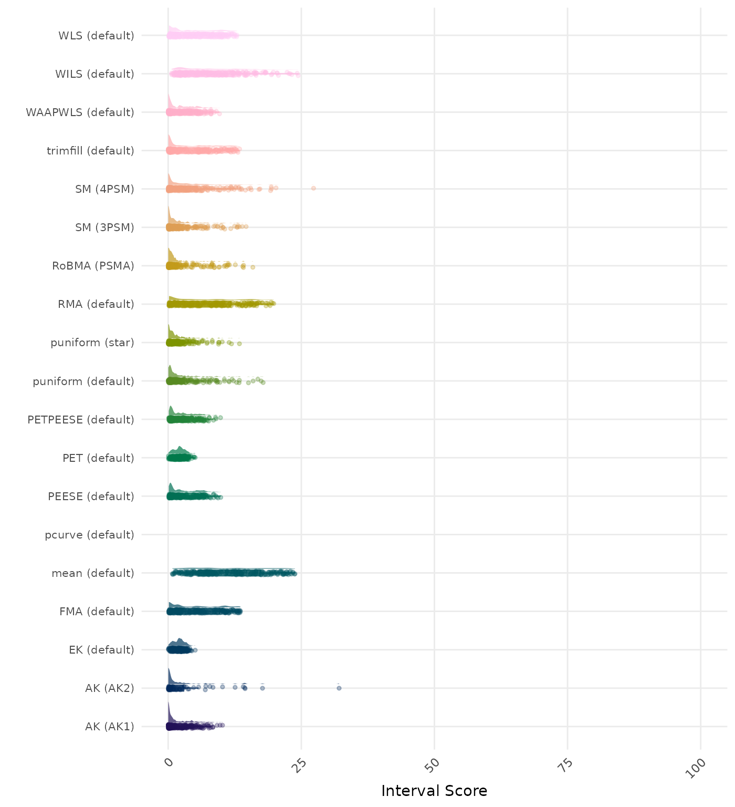


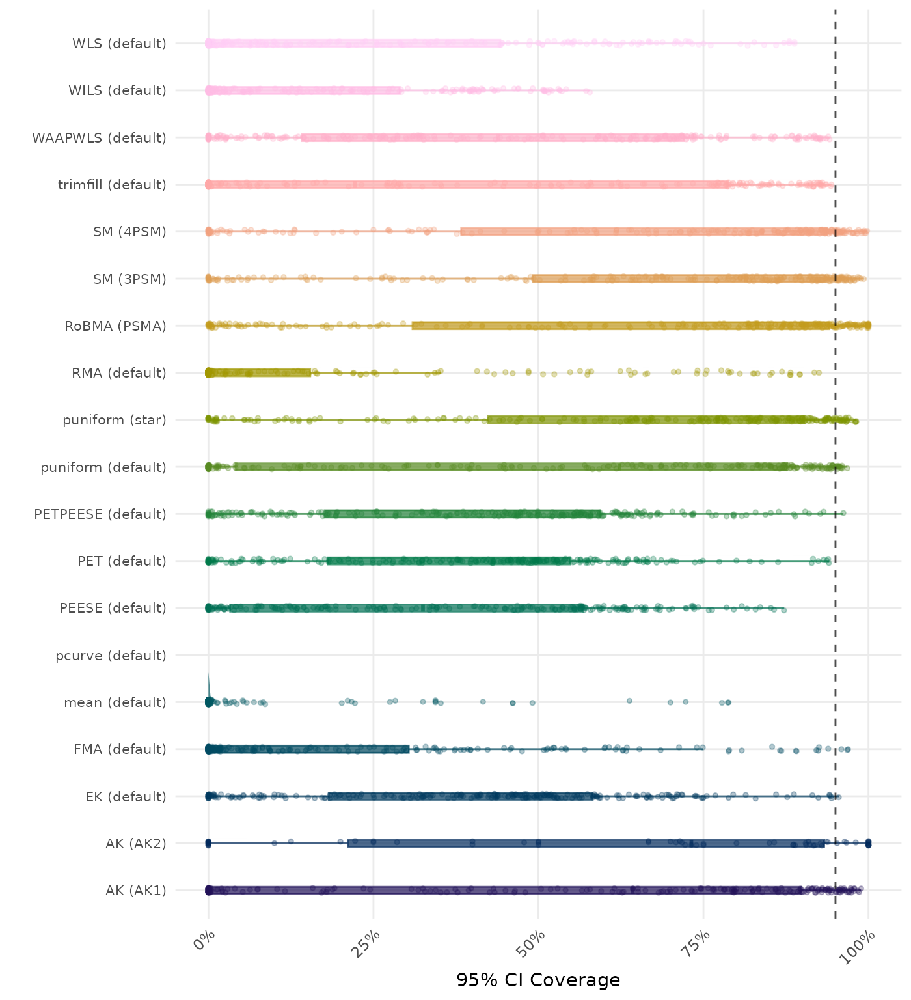
By-Condition Performance (Replacement in Case of Non-Convergence)
The results below incorporate method replacement to handle non-convergence. If a method fails to converge, its results are replaced with the results from a simpler method (e.g., random-effects meta-analysis without publication bias adjustment). This emulates what a data analyst may do in practice in case a method does not converge. However, note that these results do not correspond to “pure” method performance as they might combine multiple different methods. See Method Replacement Strategy for details of the method replacement specification.
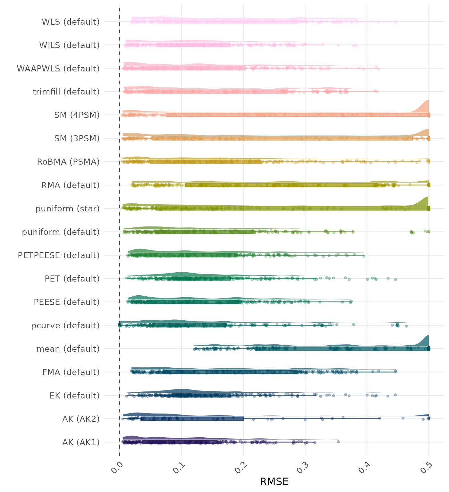
Values lower than -0.5 or larger than 0.5 are visualized as -0.5 and 0.5 respectively.
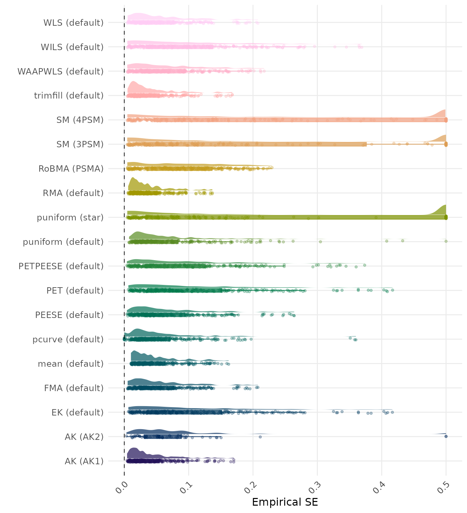
Values larger than 0.5 are visualized as 0.5.
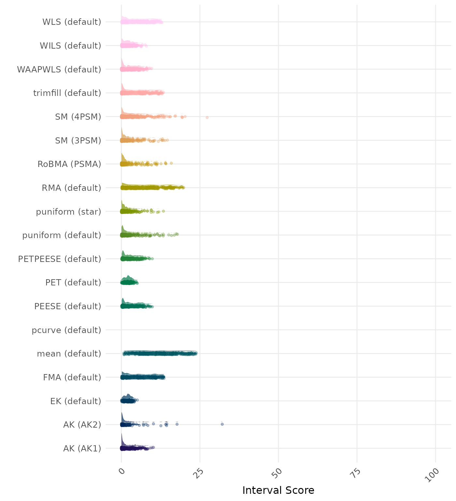
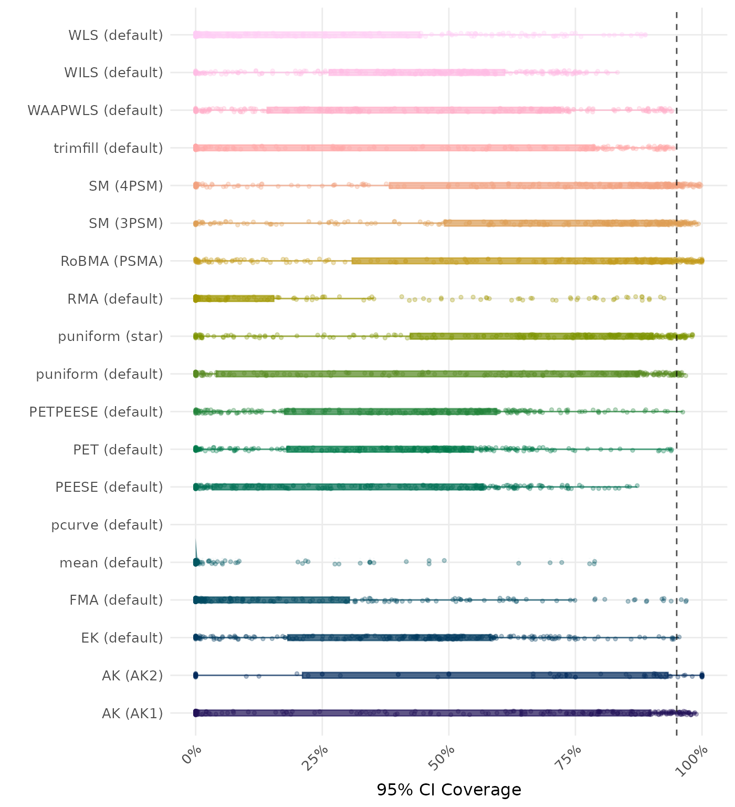

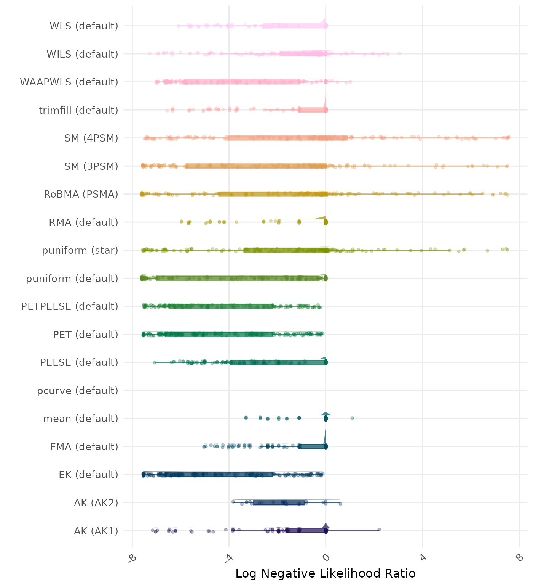
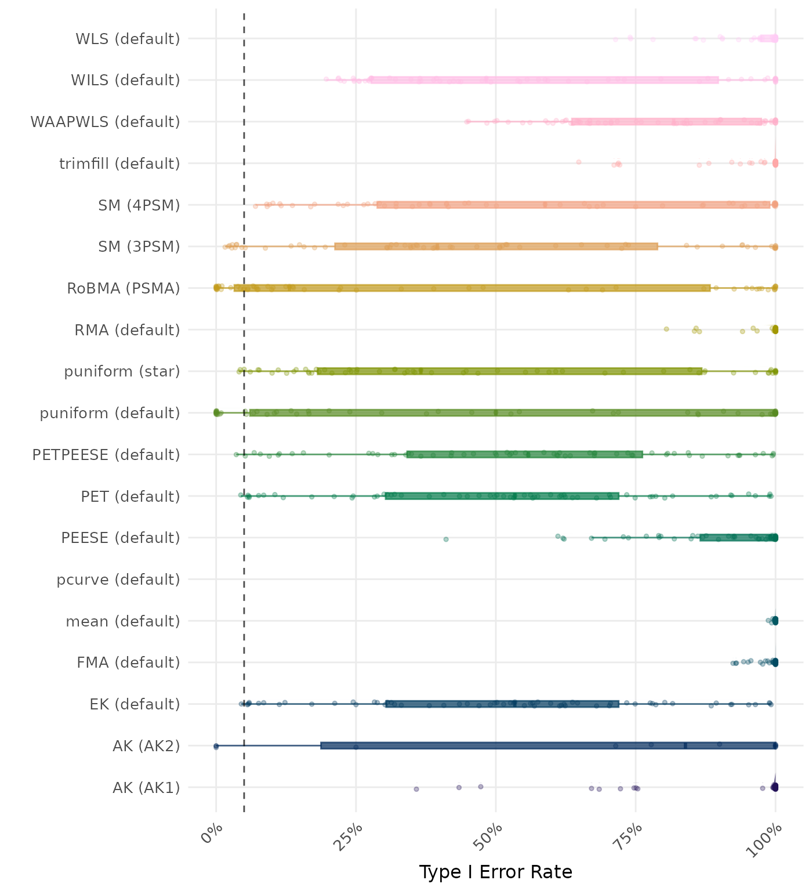
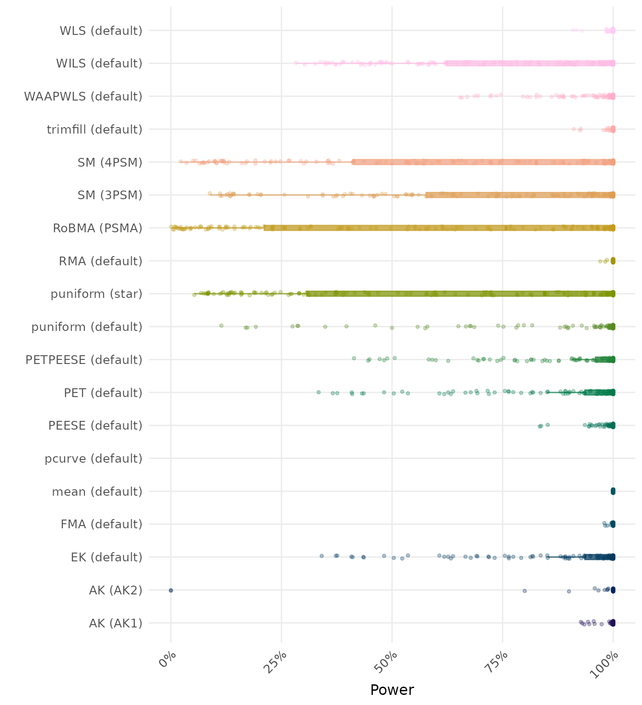
Session Info
This report was compiled on Mon Oct 13 10:10:29 2025 (UTC) using the following computational environment
## R version 4.5.1 (2025-06-13)
## Platform: x86_64-pc-linux-gnu
## Running under: Ubuntu 24.04.3 LTS
##
## Matrix products: default
## BLAS: /usr/lib/x86_64-linux-gnu/openblas-pthread/libblas.so.3
## LAPACK: /usr/lib/x86_64-linux-gnu/openblas-pthread/libopenblasp-r0.3.26.so; LAPACK version 3.12.0
##
## locale:
## [1] LC_CTYPE=C.UTF-8 LC_NUMERIC=C LC_TIME=C.UTF-8
## [4] LC_COLLATE=C.UTF-8 LC_MONETARY=C.UTF-8 LC_MESSAGES=C.UTF-8
## [7] LC_PAPER=C.UTF-8 LC_NAME=C LC_ADDRESS=C
## [10] LC_TELEPHONE=C LC_MEASUREMENT=C.UTF-8 LC_IDENTIFICATION=C
##
## time zone: UTC
## tzcode source: system (glibc)
##
## attached base packages:
## [1] stats graphics grDevices utils datasets methods base
##
## other attached packages:
## [1] scales_1.4.0 ggdist_3.3.3
## [3] ggplot2_4.0.0 PublicationBiasBenchmark_0.1.0
## [5] devtools_2.4.6 usethis_3.2.1
##
## loaded via a namespace (and not attached):
## [1] gtable_0.3.6 xfun_0.53 bslib_0.9.0
## [4] htmlwidgets_1.6.4 remotes_2.5.0 lattice_0.22-7
## [7] vctrs_0.6.5 tools_4.5.1 Rdpack_2.6.4
## [10] generics_0.1.4 curl_7.0.0 sandwich_3.1-1
## [13] tibble_3.3.0 pkgconfig_2.0.3 RColorBrewer_1.1-3
## [16] S7_0.2.0 desc_1.4.3 distributional_0.5.0
## [19] lifecycle_1.0.4 compiler_4.5.1 farver_2.1.2
## [22] stringr_1.5.2 textshaping_1.0.4 htmltools_0.5.8.1
## [25] sass_0.4.10 clubSandwich_0.6.1 yaml_2.3.10
## [28] pillar_1.11.1 pkgdown_2.1.3 jquerylib_0.1.4
## [31] ellipsis_0.3.2 cachem_1.1.0 sessioninfo_1.2.3
## [34] digest_0.6.37 stringi_1.8.7 purrr_1.1.0
## [37] labeling_0.4.3 fastmap_1.2.0 grid_4.5.1
## [40] cli_3.6.5 magrittr_2.0.4 triebeard_0.4.1
## [43] crul_1.6.0 pkgbuild_1.4.8 osfr_0.2.9
## [46] withr_3.0.2 rmarkdown_2.30 httr_1.4.7
## [49] ragg_1.5.0 zoo_1.8-14 kableExtra_1.4.0
## [52] memoise_2.0.1 evaluate_1.0.5 knitr_1.50
## [55] rbibutils_2.3 viridisLite_0.4.2 rlang_1.1.6
## [58] urltools_1.7.3.1 Rcpp_1.1.0 glue_1.8.0
## [61] httpcode_0.3.0 xml2_1.4.0 pkgload_1.4.1
## [64] svglite_2.2.1 rstudioapi_0.17.1 jsonlite_2.0.0
## [67] R6_2.6.1 systemfonts_1.3.1 fs_1.6.6